确定性控制的题目是“让输出到达某个值”，随机控制的题目是“让输出的波动尽量小”。两者的评价指标从“误差”换成了“方差”，而方差不会被反馈“消掉”——它只能被搬运、被整形、被限制在一个下界之上。本章要回答三个问题：这个下界是多少、怎么算、以及为什么工程上常常主动放弃它。
先看一个在现场极常见的场景。某温度回路的设定值是 80 ℃，控制器稳定之后，记录仪上的曲线不再有趋势，但一直在 79.6 到 80.4 之间随机地抖。操作员问：能不能把它压平一点？
直觉的回答是“加大增益”。但如果真的把比例增益从 1 加到 3，画面往往不会变平：抖动幅度可能略降，也可能反而变大，而且控制阀开始频繁动作，执行机构的动作次数成倍上升。这个现象说明，稳态抖动的主要成分不是“控制器不够努力”，而是扰动本身——反馈只能抑制它“能够观测并且来得及响应”的那部分。
本章的对象就是一个这样的小系统：一阶、单输入单输出、有随机扰动。写成差分方程
y[k]=a\,y[k-1]+b\,u[k-d]+e[k]+c\,e[k-1] \tag{62-1}
其中 e[k] 是零均值的白噪声序列，\sigma_e 是它的标准差。这个式子有三个部分：a\,y[k-1] 是对象自己的惯性，b\,u[k-d] 是控制量经过 d 拍延迟之后的作用，e[k]+c\,e[k-1] 是扰动。最后这一项是本章的主角。
式 (62-1) 里的扰动项 e[k]+c\,e[k-1] 有一个可以调的形状参数 c。c=0 时扰动是纯白噪声：相邻两拍完全独立。c=0.9 时，扰动变成“前后高度相关”的序列：这一拍是正的，下一拍多半还是正的。
两者的方差并不相同——e[k]+c\,e[k-1] 的方差是 (1+c^2)\sigma_e^2，所以 c=0.9 的扰动方差是 c=0 时的 1.81 倍。但比方差更重要的差别在可预测性：
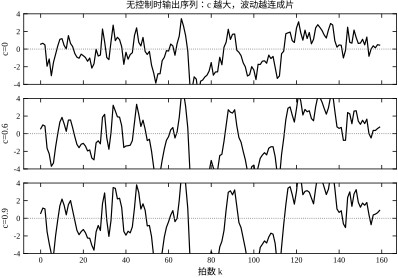
图 62-1 把三条无控制的输出序列画在一起。c=0 那条上下乱跳、没有记忆；c=0.9 那条呈现出明显的“成片”结构——连着几拍偏正、再连着几拍偏负。这三条曲线的方差分别是 1.00、1.36 与 1.81（理论值 1+c^2），但肉眼看过去，第三条更像“一个缓慢起伏的信号”，而不是噪声。
这个“形状”就是随机控制唯一可以利用的资源。控制器不能消除白噪声，但它可以利用噪声的相关性，把可预测的那一部分提前扣掉。
把式 (62-1) 往后推一拍：
y[k+1]=a\,y[k]+b\,u[k]+e[k+1]+c\,e[k] \tag{62-2}
右端有两类东西。一类是在 k 时刻已经知道的：y[k]、e[k]（扰动可以重构，见 §62.2.2）、以及我们马上要决定的 u[k]。另一类是下一拍才会揭晓的：e[k+1]。
最小方差控制（minimum variance control，MVC）的做法极其直接：把已知的那部分凑成零，让下一拍的输出只剩下无法预测的 e[k+1]。令
a\,y[k]+b\,u[k]+c\,e[k]=0 \quad\Longrightarrow\quad u[k]=-\frac{a\,y[k]+c\,e[k]}{b} \tag{62-3}
代回式 (62-2)，得到 y[k+1]=e[k+1]。也就是说，闭环输出逐拍等于新息，方差恰好是 \sigma_e^2。
这是随机控制里最漂亮的一个结论：在模型准确、无延迟、执行器不限幅的前提下，输出的方差可以精确做到 \sigma_e^2，一拍都不多。 这个值不是一个“不错的结果”，而是一个硬下界——任何控制器都不可能做得比它更好，因为 e[k+1] 在 k 时刻根本不存在，谁都预测不了。
代价藏在这个“漂亮”里。看式 (62-3)：u[k] 与 y[k] 是代数关系，增益是 1/b 量级，而 y 里含有方差为 (1+c^2)\sigma_e^2 的噪声。控制器把噪声原封不动地放大 1/b 倍送到执行器上。 §62.6.2 的实测里，输出方差从 6.78 降到 1.01，控制量方差却从 0 升到 7.93——控制量的标准差（2.82）是输出标准差（1.01）的近三倍。
式 (62-3) 能成立，依赖一个隐含条件：控制量 u[k] 能立刻影响 y[k+1]。如果对象有 d 拍延迟，u[k] 最早也要到 y[k+d] 才起作用，那么 y[k+1],\dots,y[k+d-1] 这些拍上的扰动就完全无从干预。
这就是延迟对随机控制的惩罚。d=1 时下界是 1.0000；d=2 时变成 2.9600；d=3 时是 4.2144（§62.6.3 会给出完整推导与实测）。多一拍延迟，下界涨了近三倍，原因不是控制器变笨了，而是那几拍上的 e 已经“生米煮成熟饭”。
这个结论有一个很实用的推论：在随机控制里，延迟是最贵的资源。 确定性控制里，延迟主要侵蚀相位裕度，通常还有裕度可退；随机控制里，延迟直接抬高方差下界，而且这个下界是物理的，任何算法都绕不过去。第 47 章与第 107 章的 Smith 预估能把延迟“搬出”闭环，但它搬的是确定性部分，对这几拍已经发生的扰动同样无能为力。
把本章的方法和前面几章摆在一起，可以看到一条清晰的分界：
| 问题 | 评价指标 | 主要矛盾 | 代表章节 |
|---|---|---|---|
| 确定性跟踪 | 误差、调节时间、超调 | 动态够不够快、稳不稳 | 第 44、58、61 章 |
| 随机调节 | 输出方差、控制方差 | 噪声能抵消多少、代价多大 | 本章 |
| 随机跟踪 | 方差 + 跟踪偏差 | 两者叠加，通常需要 GMV | §62.2.6 |
分界的实质是“扰动有没有结构”。如果扰动是未知的、无结构的（任何频率都可能、任何时刻都可能），那么控制器唯一能做的就是“高增益压制”，这时问题退化为确定性控制的鲁棒性问题。如果扰动有结构——尤其是有色结构，即相邻时刻相关——那么就可以用噪声模型把它“预测”出来，随机控制才有用武之地。
所以随机控制的第一件事不是设计控制器，而是判断噪声有没有结构。这一步做错，后面的推导再漂亮也是空转。
后面的安排是：§62.2 建立 ARMAX 模型、新息、Diophantine 恒等式与最小方差下界这一套数学；§62.3 把它压成五步设计流程；§62.4 讨论连续情形（以及为什么工程上几乎总是直接在离散域做）；§62.5 给离散实现；§62.6 用实测数据说明下界能不能达到、失配会怎样、马尔可夫跳变会怎样；§62.7 逐个解释 a,b,c,d,\lambda 的作用；§62.8 给调参顺序与一次完整实录；§62.9 讲广义最小方差、极点配置、自适应最小方差这几条改进路线；§62.10 讲现场辨识与落地；§62.11 划边界；§62.12 给可复现代码。
一句话概括本章的立场：最小方差控制是一个“标尺”，不是一个“产品”。 它给出的下界告诉你“这件事最好能做到多好”，而它本身因为控制量太大、对失配太敏感，很少直接上线。真正上线的是它的各种“打折版”——广义最小方差、带约束的 MVC、以及自适应版本。
为了避免与相邻章节重复，这里把边界一次说清。
讲什么。 只讲一个最小例子：一阶对象、有色噪声、固定整数延迟、零均值扰动、无约束。围绕这个例子讲三件事——方差下界怎么算、控制律怎么写、模型错了会怎样。选最小例子不是偷懒，而是因为随机控制的全部核心结论（下界与 b 无关、极点被对消、失配单侧悬崖、噪声相关性压缩增益裕度）在这个例子上都能完整呈现，换成二阶只会增加符号，不增加洞见。
不讲什么，以及去哪看。
三条阅读路径。 只想判断“这个回路该不该做随机控制”的读者，直接读 §62.11.5 的三分钟估算，十分钟能出结论；准备落地的读者，读 §62.3 的五步流程与 §62.10 的落地清单；要复现或改代码的读者，读 §62.12，其中 §62.12.10 给了一个手算校验，三分钟就能确认代码没写错。
把式 (62-1) 写成算子形式。令 z^{-1} 为延迟算子（z^{-1}y[k]=y[k-1]），定义三个多项式
A(z^{-1})=1-a z^{-1},\qquad B(z^{-1})=b,\qquad C(z^{-1})=1+c z^{-1} \tag{62-4}
于是式 (62-1) 可以写成
A(z^{-1})\,y[k]=z^{-d}B(z^{-1})\,u[k]+C(z^{-1})\,e[k] \tag{62-5}
这种形式叫 ARMAX（autoregressive moving average with exogenous input）：A 是自回归部分（对象惯性），C 是滑动平均部分（噪声相关性），B 是外部输入通道。三个多项式各有分工，而且在随机控制里它们不再是“一个传递函数拆成三块”，而是三个必须分别知道的量。
这一点和前面几章很不一样。在确定性控制里，B/A 就可以描述全部动态，C 无关紧要；到了随机控制，C 直接决定下界（式 62-18），不知道 C 就不知道“最好能做到多好”。这也是随机控制比确定性控制多做的一步工作：辨识噪声模型。
式 (62-5) 里的 e[k] 有一个专门的名字，叫新息（innovation）。它不是“扰动”，而是“扰动里这一拍新出现、上一拍无法预测的那部分”。
这个区分是随机控制的全部起点。对 C=1+c z^{-1} 的一阶情形，扰动是 e[k]+c\,e[k-1]。在 k-1 时刻，e[k-1] 已知，所以可以预测“下一拍的扰动大约是 c\,e[k-1]”；剩下真正无法预测的只有 e[k]。MVC 对付的就是这个 e[k]，而 c\,e[k-1] 那一部分是可以提前扣掉的。
新息可以从实测数据在线重构。把式 (62-5) 解出 e[k]：
e[k]=y[k]-a\,y[k-1]-b\,u[k-d]-c\,e[k-1] \tag{62-6}
这是一个递推：每一拍用当前的 y、u 和上一拍的 e，算出这一拍的新息。它本质上是一个“逆噪声模型”滤波器，传递函数是 A/C：
e[k]=\frac{A(z^{-1})}{C(z^{-1})}\,y[k]-\frac{z^{-d}B(z^{-1})}{C(z^{-1})}\,u[k] \tag{62-7}
式 (62-7) 有一个必须注意的性质：C 必须是最小相位的（零点在单位圆内）。若 C 有零点在圆外，1/C 不稳定，新息重构会发散。对本章的一阶 C=1+c z^{-1}，零点在 z=-c，只要 |c|<1 就满足。工程上辨识出来的 C 若出现 |c|\ge1，说明要么数据有问题，要么模型阶次太低，不能直接拿去算控制律。
要控制 y[k+d]，就得先能预测它。把式 (62-5) 两边乘 z^{d}（即向前推 d 拍），得到
y[k+d]=\frac{B}{A}u[k]+\frac{C}{A}e[k+d] \tag{62-8}
右端第二项含 e[k+d]，它在 k 时刻还不存在，无法预测。要把“能预测”与“不能预测”分开，需要做一次多项式除法：把 C/A 拆成“有限项 + 剩下的真分式”。
C(z^{-1})=A(z^{-1})F(z^{-1})+z^{-d}G(z^{-1}) \tag{62-9}
这就是 Diophantine 恒等式（也叫丢番图方程）。F 是商、z^{-d}G 是余项，次数约束是 \deg F=d-1、\deg G=\deg A-1。对本章的一阶 A，G 退化为一个常数 g_0。
把式 (62-9) 代入式 (62-8)，整理后得到本章最核心的分解：
\boxed{\; y[k+d]=\underbrace{\frac{B F}{C}u[k]+\frac{G}{C}y[k]}_{\text{可预测，}k\text{ 时刻已知}} +\underbrace{F e[k+d]}_{\text{不可预测}} \;} \tag{62-10}
这个式子的结构值得反复看。可预测部分只含 u[k] 与 y[k]——都是当前拍拿得到的东西；不可预测部分是 F 作用在未来的新息上，F 的次数是 d-1，正好对应“未来 d 拍”。
F 的系数可以直接递推。对本章的一阶 A、一阶 C，恒等式两端的 z^{-k} 系数逐项对齐，得到
f_1=a+c,\qquad f_k=a\,f_{k-1}\ (k\ge2) \quad\Longrightarrow\quad f_k=(a+c)\,a^{k-1} \tag{62-11}
这个式子值得单独看一眼：第一项由“对象惯性 a”与“噪声相关性 c”共同决定，之后每一项按对象极点 a 衰减。a+c 越大，预测就越“有把握”（噪声黏、对象慢），下界抬得越高；而衰减速度由 a 单独决定，a 越小（对象越快），延迟的边际代价掉得越快。
G 在一阶情形下是一个常数：
g_0=a\,f_{d-1}+c\,\delta_{d,1} \tag{62-12}
其中 \delta_{d,1} 在 d=1 时为 1、否则为 0。把这几个数算出来，放在表 62-1 里。
| d | F(z^{-1}) | g_0 | 下界 \sum f_i^2 |
|---|---|---|---|
| 1 | 1 | 1.4000 | 1.0000 |
| 2 | 1+1.4z^{-1} | 1.1200 | 2.9600 |
| 3 | 1+1.4z^{-1}+1.12z^{-2} | 0.8960 | 4.2144 |
| 4 | 1+1.4z^{-1}+1.12z^{-2}+0.896z^{-3} | 0.7168 | 5.0172 |
| 5 | 续一项 0.7168z^{-4} | 0.5734 | 5.5310 |
表 62-1 的数字全部由 a=0.8、c=0.6 算出，与仿真无关，可以手算核对：f_1=1.4、f_2=0.8\times1.4=1.12、f_3=0.8\times1.12=0.896、f_4=0.8\times0.896=0.7168。
注意最后一列的增量：d 从 1 到 2 涨 1.9600，从 2 到 3 涨 1.2544，从 3 到 4 涨 0.8028，从 4 到 5 涨 0.5138。延迟的边际代价按 a^2=0.64 的比例递减——第一拍延迟最贵，后面的越来越便宜。这不是巧合：a 决定对象“记住”过去多久，a 越小，越早的扰动越容易被对象自己消化掉。
表 62-1 还给出一个实用的判断：如果下界从 d=1 到 d=2 涨了将近三倍，那么“把延迟减掉一拍”的价值远大于“把控制器调好一点”。 这也是随机控制里最常见的工程改进方向——不是换算法，是挪传感器、换执行器、把总线周期缩短。
有了式 (62-10)，控制律的推导只有一步：让可预测部分等于零。
B(z^{-1})F(z^{-1})\,u[k]+G(z^{-1})\,y[k]=0 \tag{62-13}
解出 u[k]，对本章的常数 B=b：
u[k]=-\frac{1}{b\,f_0}\left(g_0\,y[k]+\sum_{i=1}^{d-1}b\,f_i\,u[k-i]\right) \tag{62-14}
对 d=1，F=1、g_0=a+c，式 (62-14) 退化为
u[k]=-\frac{a+c}{b}\,y[k] \tag{62-15}
这是一个纯比例控制器，增益 -(a+c)/b=-2.8。把它和式 (62-3) 对比一下：式 (62-3) 是 u=-(ay+ce)/b，含新息；式 (62-15) 只用 y。两者在闭环上完全等价，但实现上差别很大：
工程上几乎总是用式 (62-14) 这种“消去新息”的形式。 原因很简单：新息是算出来的中间量，任何模型误差都会在它身上累积；而 y 是实测的，不放大误差。这也是最小方差控制看起来“不像随机控制”的原因——它的最终实现常常就是一个比例控制器，随机性全部藏在增益的取值里。
对 d=2：F=1+1.4z^{-1}、g_0=1.12、b=0.5，
u[k]=-\frac{1.12}{0.5}y[k]-1.4\,u[k-1]=-2.24\,y[k]-1.4\,u[k-1] \tag{62-16}
这里出现了一个有意思的结构：控制律自己带了一个极点 -1.4。它是“用过去两拍的信息去推断这一拍该补多少”，本质上是一个预测器。预测器越用力，控制律的增益越大，对模型误差也越敏感。§62.6.4 会看到，d=1 时对象增益只要比模型大 30% 就发散，而 a 偏 10% 只让方差涨一个百分点——对随机控制致命的是增益误差，不是惯性误差。
把式 (62-13) 代回式 (62-10)，可预测部分被清零，剩下的只有
y[k+d]=F(z^{-1})\,e[k+d] \tag{62-17}
两端取方差，利用 e 是白噪声：
\operatorname{Var}(y)=\sigma_e^2\sum_{i=0}^{d-1}f_i^2 \tag{62-18}
这就是最小方差下界。它的形式极其简单：噪声方差乘上一个由 F 决定的系数。三个性质值得记住：
式 (62-18) 还有一个等价写法，用频域看更直观：
\operatorname{Var}(y)=\frac{\sigma_e^2}{2\pi}\int_{-\pi}^{\pi}|F(e^{j\omega})|^2\,\mathrm d\omega \tag{62-19}
它说的是：闭环输出的功率谱就是 |F|^2 乘噪声谱。F 是“滤波器”，MVC 做的事就是把这个滤波器压到物理允许的最窄。d=1 时 F=1，滤波器是平的——输出在所有频率上都是白的，方差最小。
式 (62-13) 只关心输出，完全不考虑控制量多大。§62.1.3 已经看到代价：输出方差 1.01，控制量方差 7.93。工程上这往往不可接受——阀门会磨坏，电机要发热，执行机构有动作次数寿命。广义最小方差（generalized minimum variance，GMV）把这笔代价显式写进指标：
J=\mathbb E\left\{\left[P(z^{-1})y[k+d]-R(z^{-1})r[k]\right]^2+\lambda\,u[k]^2\right\} \tag{62-20}
P、R 是设计者选的加权多项式（通常取 1），\lambda>0 是控制量的价格。\lambda 越大，控制越“贵”，控制器越不愿意动。
对本章的 d=1、P=R=1、调节问题（r=0）、新息形式，一步预测是 \hat y[k+1]=a\,y[k]+c\,e[k]，而 y[k+1]=\hat y[k+1]+b\,u[k]。代入式 (62-20)，对 u[k] 求导并令其为零：
2b\left(\hat y[k+1]+b\,u[k]\right)+2\lambda\,u[k]=0 \quad\Longrightarrow\quad u[k]=-\frac{b\,\hat y[k+1]}{b^2+\lambda} \tag{62-21}
这个式子的结构很值得看。分子与 MVC 相同（都是 -b\hat y），分母从 b^2 变成 b^2+\lambda。\lambda 的作用相当于把对象增益“虚增”了一部分，于是闭环的有效增益下降。三个极限：
注意式 (62-21) 里 \lambda 与 b^2 是相加的，这意味着\lambda 的合适取值依赖 b。b 减半，b^2 变成四分之一，同样的 \lambda 就“更贵”了。这一点在 §62.7.6 会展开：\lambda 不是一个无量纲的旋钮，它的量纲是 b^2，换对象就要重标。
确定性系统说“稳定”，指的是初值扰动下轨线收敛。随机系统里“收敛”有不止一种含义，必须分清，否则会拿一个口径的结论去套另一个口径的现象。
依概率稳定：对任意 \epsilon>0，\lim_{k\to\infty}\Pr\{\|y[k]\|>\epsilon\}=0。它说的是“跑远的概率趋于零”，但不管“跑远时能跑多远”。
均方稳定：\lim_{k\to\infty}\mathbb E\{\|y[k]\|^2\}=0，且二阶矩一致有界。它管的是“能量的期望”，比依概率稳定强。
几乎必然稳定：\Pr\{\lim_{k\to\infty}y[k]=0\}=1。它管的是“每一条样本轨线”，但允许极少数轨线在有限时间内冲得很高。
三者的关系是：均方稳定 \Rightarrow 依概率稳定，几乎必然稳定与均方稳定互不包含。对线性时不变系统，若二阶矩存在，三者由同一个条件刻画——闭环极点全部在单位圆内。所以在 LTI 场合争这三种定义没有意义，真正的差别出现在参数时变或跳变的时候。
马尔可夫跳变系统就是这样一个场合。§62.6.6 会看到：每一组参数的闭环极点都在单位圆内，但切换足够快时系统仍然可能均方发散。原因是“每一拍都稳定”不等于“长期稳定”，切换本身会注入能量。
把参数当作一个马尔可夫链的输出：
x[k+1]=A_{\theta_k}x[k]+B_{\theta_k}u[k]+E w[k],\qquad \Pr\{\theta_{k+1}=j\mid\theta_k=i\}=p_{ij} \tag{62-22}
\theta_k 在有限个模式之间跳，每个模式有自己的 A_i,B_i。工程上的对应物很多：批次切换、工况切换、传感器/执行器部分失效、负载突变。
均方稳定的判据是一组耦合的 Lyapunov 不等式：存在 P_i>0 使得
\sum_{j}p_{ij}A_j^{\mathsf T}P_iA_j-P_i<0,\qquad \forall i \tag{62-23}
它和 LTI 的 A^{\mathsf T}PA-P<0 长得像，但每个模式要各自满足一个“把所有可能跳到的模式都算进去”的不等式。这解释了为什么“逐模式稳定”不够：式 (62-23) 的第二项是加权和，切换概率 p_{ij} 直接进入稳定性条件。
对控制设计，这意味着一个残酷的事实：按某一个模式设计的固定控制器，可能在另一个模式下跌到不稳定，而按“最坏模式”设计又会在好模式上过度保守。 §62.6.6 的实测给出这两种设计的量化差距。
最后回答一个容易被误解的问题：MVC 把闭环极点“放”到哪了？
由式 (62-17)，y[k+d]=F(z^{-1})e[k+d]。右端是一个有限脉冲响应：F 只有 d 项，没有分母。所以从新息到输出的传递函数没有极点——它不是一个“极点配置”的结果，而是“极点被消掉”的结果。
更准确地说，MVC 用控制律把对象极点 a 与噪声零点 -c 一起消掉了：
y=\frac{C}{A}\cdot\frac{1}{1+z^{-d}G/(AF)}\,e =\frac{CF}{AF+z^{-d}G}\,e
把 BFu+Gy=0 写成 u=-Gy/(BF)，代入对象方程 Ay=z^{-d}Bu+Ce，两边同乘 F 得 y(AF+z^{-d}G)=CFe。而 Diophantine 恒等式告诉我们分母 AF+z^{-d}G 恰好就是 C，于是
\frac{y}{e}=\frac{CF}{C}=F(z^{-1})
A 与 C 都被对消，只剩 F。这就是式 (62-17) 的来源。换一个同样正确的写法：若把控制律直接代回 Ay=z^{-d}Bu+Ce 而不乘 F，分母写成 ABF+z^{-d}BG，由 C=AF+z^{-d}G 左乘 B 得 BC=ABF+z^{-d}BG，同样看到 B、C 成对消失。
这个推导有两条工程含义。第一，MVC 要求 B 与 C 都可逆（最小相位），否则“对消”会把不稳定极点搬到闭环里——这正是 §62.2.2 强调 C 最小相位的原因，也是 MVC 不能用于非最小相位对象的原因。第二，“极点被消掉”意味着模型误差没有缓冲：真实对象若与模型有偏差，被消掉的极点会“漏”出来，闭环就多了一个设计时没考虑的动态。§62.6.4 的失稳就是这么来的。
本章从头到尾用 A(z^{-1})y=z^{-d}B(z^{-1})u+C(z^{-1})e 这一个式子。辨识课上通常会给三个候选，值得说清为什么选它。
ARX：Ay=z^{-d}Bu+e。 扰动被强制成 1/A 的形状——也就是“负载扰动从入口进入、与对象共享同一个惯性”。它最大的好处是线性回归，最小二乘一步到位；最大的问题是结构错时误差全跑进 A：若真实扰动有色，ARX 会把噪声的动态硬塞给 A，估出的 a 偏大。a 偏大的直接后果是下界被算小、控制律被算得比实际更激进——偏差的方向正好是危险的那一侧。
OE：y=\frac{B}{F}u+e。 对象动态与噪声完全分开，参数无偏，是“对象就是对象、噪声就是噪声”的写法。代价有两个：要解非线性优化（有局部极小），而且它给不出闭式的 Diophantine 分解——本章 §62.2.6 那一整套 F、G 递推没有对应的简单形式。做辨识研究用 OE，做控制器设计用 ARMAX，这是两个不同的目的。
ARMAX：两边共享 A。 它把“扰动经过对象惯性”这件事写进了结构里，同时留出 C 去描述噪声的额外形状。本章的物理图像正好对上：负载扰动从对象入口进来，先被对象惯性与延迟整形，再叠加到输出上，所以 C/A 里必须出现同一个 A。c=0 时它退化成 ARX；c\ne0 时它多了一个参数，多出来的这个参数就是“扰动比对象更黏”的那部分。
选择 ARMAX 的真正理由不是“它最通用”，而是三条具体的匹配：
它也有明确的失效场合。量测噪声为主时，噪声不是“从入口进来”的，共享 A 的假设就不成立，此时强行用 ARMAX 会把量测噪声的动态并进 A，a 被系统性高估。判断办法很简单：看残差的白噪声检验——若残差在低阶就白了，但估出的 a 与阶跃响应测出的时间常数对不上，就是这一类结构错。结构错不能靠调参数补救，只能换结构或提高阶次。
把 §62.2 的推导压成现场能执行的流程，只有五步。每一步的输出都是下一步的输入，任何一步偷懒，都要在后面的数据里还账。
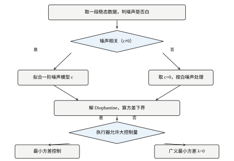
图 62-2 是这五步的框图。图中有两处回头箭头，比五个方框本身更重要：噪声检验不通过，要退回第一步重选模型阶次；压力测试不通过，要退回第三步改辨识方案（加激励、换数据段、延长采样），而不是在第五步“再调调 \lambda”。压力测试暴露的是模型问题，用控制器参数去补，只会把问题推到别的工况上。
这一步决定“要不要做随机控制”。§62.1.2 已经给出理由：白噪声不可预测，任何控制器都只能被动承受，此时 MVC 与“不控制”的差别仅仅是把白噪声原样放大到执行器上。
可用的判据是一阶自相关。对扰动项 e[k]+c\,e[k-1]，
\rho_1=\frac{\operatorname{Cov}(\eta[k],\eta[k-1])}{\operatorname{Var}(\eta)} =\frac{c}{1+c^2} \tag{62-24}
c=0 时 \rho_1=0；c=0.6 时 \rho_1=0.4412；c=0.9 时 \rho_1=0.4972。这个函数不是单调递增到 1 的——它在 c=1 处取最大值 0.5，然后随 c 继续增大而下降。所以一阶滑动平均的扰动，自相关最大只有 0.5。现场若测出 |\rho_1| 只有 0.05\sim0.1，即便模型完全正确，MVC 相对不控制也只能拿回百分之几的方差，这时把精力放到确定性回路上更划算。
具体做法：用现有的 PID 把回路稳住（第 44 章与第 106 章的方法足够），采一段 y、u，拟合 ARMAX 后对残差做 Ljung–Box 检验。残差是白的，说明模型把结构吃干净了；残差仍有显著自相关，说明阶次不够（需要二阶 A 或更高阶 C），退回第一步。
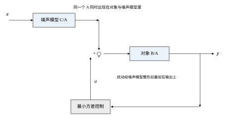
图 62-3 是模型的信号流。要注意图中两个模块共用同一个 A：对象是 B/A，噪声是 C/A。这个共用是 ARMAX 的核心假设——扰动与输入从同一个入口进入对象（输入扰动），而不是在输出端直接叠加（输出扰动）。现场若以测量噪声为主，正确的结构是 y=Bu/A+Ce，噪声模块没有分母，控制器也随之改变。入口判错，后面所有数字都错，而且错得很隐蔽：拟合残差照样很小。
延迟必须单独测，不能和 a,b 一起“拟合出来”。原因是下界对 d 极其敏感：d 从 1 到 2，下界从 1.0000 涨到 2.9600（表 62-1）。d 错一拍，误差量级和“什么都没做”差不多。
测法用互相关：给一段 PRBS 激励，算 \mathrm{Cov}(u[k],y[k+\tau])，第一个显著非零的 \tau 就是 d。要注意三件事：
两种估计错误的方向不同：估小一拍，控制器以为自己能影响 y[k+1]，实际不能，控制律对着已经过期的误差使劲，实测方差明显高于下界、控制量还更大；估大一拍，下界被高估，控制器过于保守，输出方差高于必要值但不会发散。前者危险，后者浪费。
这一步有个容易忽略的细节：c 必须单独估，不能指望最小二乘顺带给出。把式 (62-1) 写成回归形式 y[k]=a\,y[k-1]+b\,u[k-d]+\eta[k]，其中 \eta[k]=e[k]+c\,e[k-1] 是自相关的。自相关残差与回归量 y[k-1] 相关，普通最小二乘给出的 a 是有偏的，偏差方向取决于 c 的符号。
本章的做法分两步：先用工具变量法得到 a,b，再固定 a,b，把式 (62-6) 改写成
e[k]=y[k]-a\,y[k-1]-b\,u[k-d]-c\,e[k-1]
对 c 做标量递推最小二乘。实验 8 验证了这个思路可行：取真值 c=0,0.3,0.6,0.9，在 a,b 已知的条件下，1000 拍之后 c 的估计尾段均值为 +0.0067、+0.3067、+0.6067、+0.9067，标准差都只有 0.0023。四个真值全部命中，误差在千分位。
激励条件同样重要。闭环运行时 u 与 y 强相关，辨识容易“自圆其说”：数据拟合得很漂亮，参数却偏了。标准做法是把一段 PRBS 叠到设定值上（第 61 章给的 PRBS 图样可以直接复用），或者利用投运前的开环阶段。
F、G 由式 (62-11)、式 (62-12) 递推，下界由式 (62-18) 求和。这三步全是代数，不需要仿真。表 62-2 是实验 1 的结果：左边三列是解析值，右边两列是 N=6000 拍的仿真实测（seed=3）。
| d | F(z^{-1}) | g_0 | 下界 | 实测方差 | 实测/下界 | \operatorname{var}(u) |
|---|---|---|---|---|---|---|
| 1 | 1 | 1.4000 | 1.0000 | 1.0077 | 1.008 | 7.9005 |
| 2 | 1+1.4z^{-1} | 1.1200 | 2.9600 | 3.0272 | 1.023 | 5.0563 |
| 3 | 1+1.4z^{-1}+1.12z^{-2} | 0.8960 | 4.2144 | 4.3247 | 1.026 | 3.2360 |
表 62-2 有三处值得读：
第一，实测与下界的比值在 1.008 到 1.026 之间。这点差距来自预热段的残留与有限样本的统计涨落，不是模型误差。仿真能做到这个程度，说明推导与实现是一致的。
第二，控制量方差随 d 增大而下降：7.90、5.06、3.24。延迟越长，控制器“能管”的拍数越少，动作也越少。这是“管不了就别乱动”的量化版本，也是为什么长延迟回路反而看起来更“安静”——它不是在控制，是在放弃。
第三，下界与 g_0 都只依赖 a,c,d，与 b 无关。所以这两个数列可以当作对象的“固有属性”存档，换执行器、换增益都不用重算。
工程上把比值当验收指标：
R=\frac{\operatorname{Var}_{\text{sim}}(y)}{\sigma_e^2\sum_{i=0}^{d-1}f_i^2} \tag{62-25}
R<1.1，模型与实现都对；1.1<R<1.5，先查 c 与 d；R>1.5，不要再调参数了，说明结构错了——扰动入口不对、有非线性、或者参数在漂。
MVC 的控制代价在 §62.1.3 已经算过：输出标准差 1.01，控制标准差 2.82。多数现场不接受这个比例，所以要退到 GMV，用 \lambda 把控制量“定价”。
\lambda 的初值有一个现成的量级：取 \lambda=b^2，式 (62-21) 的分母从 b^2 变成 2b^2，相当于闭环增益减半。本章 b=0.5，b^2=0.25，正好落在 §62.8 扫描表里 \lambda=0.25 那一档：输出方差 1.6201，控制方差 2.3692，两边比较均衡。这是一个很好的起点——不是最优，但一定不会离谱。
上线前必须做失配压力测试。表 62-3 是实验 5 的结果（d=1）：
| 失配项（真实值相对模型） | 输出方差 | 结论 |
|---|---|---|
| 标称 | 1.0157 | 与下界一致 |
| a\pm10\% | 1.0282 / 1.0220 | 几乎无影响 |
| b+20\% | 1.2976 | 可接受上限 |
| b+30\% | 发散 | 硬边界 |
| b-20\% | 1.1140 | 可接受 |
| b-40\% | 1.3546 | 可接受 |
| b-55\% | 1.6709 | 已明显恶化但不发散 |
| c\pm50\% | 1.1704 / 1.1377 | 灵敏度中等 |
表 62-3 是不对称的，而且方向与直觉相反：真实增益比模型大 30% 就发散，真实增益比模型小 55% 还能撑住。原因在 §62.6.4 会算清楚——d=1 时闭环极点
\rho=a-(a+c)\,\frac{b}{\hat b} \tag{62-26}
真实增益大于模型（b>\hat b）时 \rho 向负方向走，到 \rho=-1 即 b/\hat b=(1+a)/(a+c) 处发散。代入 a=0.8、c=0.6 得 b/\hat b=1.2857，也就是真实增益高出模型 28.6%——与表 62-3 里 +30\% 那一行发散完全对得上。真实增益小于模型时 \rho 向正方向走，最多回到 +a=0.8，永远在单位圆内。取 c=0 时同一条界线退化为 b/\hat b=1/a=2.25，即模型低估增益 55.6%，正是 §62.6.4 表 62-5 里 \hat b=0.2222 那一行。
这个式子还说明一件事：噪声相关性越高，增益裕度越小。c 从 0 增到 0.6，失稳界线从 2.25 压到 1.2857，可用裕度从 125% 掉到 29%。原因不神秘——c 越大，MVC 的等效增益 (a+c)/\hat b 越大，同样的增益误差被放大得越狠。
所以设计时的规则是：把 \hat b 取大一点，宁可高估增益。按辨识值的 1.2 倍设计，代价是控制量偏小、输出方差略高于下界，但换来了对“真实增益比预期大”这一最常见失配的免疫力。这条规则和确定性控制里“裕度方向随意”的直觉相反，是随机控制特有的：它不是因为保守才安全，而是因为失稳只发生在环路增益偏大的一侧。
五步里最容易被省掉的是第一步和第五步，而这两步恰恰决定“要不要做”和“能不能上线”。中间的代数再漂亮，也补不上这两步的缺口。
真实对象是连续的，采样是后加的。所以有必要把 §62.2 的离散结论放回连续域看一眼：不是为了在连续域设计控制器，而是为了判断“离散下界”里有多少是物理的、有多少是采样造出来的。
连续域的对象写成随机微分方程。以一阶惯性加纯延迟为例：
\dot y(t)=-p\,y(t)+u(t-\tau)+\xi(t) \tag{62-27}
p 是对象极点（时间常数 1/p），\tau 是纯延迟，\xi(t) 是零均值的连续白噪声，强度为 q——含义是 \operatorname{Var}\left(\int_t^{t+\Delta}\xi\,\mathrm ds\right)=q\Delta。
注意式 (62-27) 里扰动与输入从同一个入口进入，这是 §62.3.2 讲的输入扰动假设在连续域的写法。若扰动是测量噪声，它就加在 y 的测量值上，不经过对象动态，结论完全不同。
连续白噪声在物理上不存在（它的方差无穷大），工程上真实的扰动总有一个相关时间 \theta，常用一阶成形滤波器描述：
\dot\xi=-\frac{1}{\theta}\xi+\frac{\sigma_w}{\theta}w \tag{62-28}
w 是单位强度的白噪声。这个过程的稳态方差是 \sigma_w^2/(2\theta)，自相关是 e^{-|\Delta|/\theta}。\theta\to0 时它退化为白噪声，\theta 大时它是一条缓慢漂移。
这个 \theta 就是离散模型里 c 的物理来源。 连续域只有一个相关时间 \theta，离散域却把它压缩成一个标量 c，压缩过程中丢掉了“相关函数不是指数形”的部分。§62.4.4 会看到这个压缩的代价。
在 t 时刻要预测 y(t+\tau)。把式 (62-27) 积分：
y(t+\tau)=e^{-p\tau}y(t)+\int_0^{\tau}e^{-p(\tau-s)}\left[u(t+s-\tau)+\xi(t+s)\right]\mathrm ds \tag{62-29}
右端三项的性质完全不同：
所以 MVC 只能把前两项凑掉，剩下的方差就是下界：
V_c=\int_0^{\tau}e^{-2p(\tau-s)}\,q\,\mathrm ds =\frac{q}{2p}\left(1-e^{-2p\tau}\right) \tag{62-30}
这个式子有两个极限，都很有说服力。
\tau\to0：V_c\to0。没有延迟时，连续域的 MVC 可以把白噪声完全抵消——代价是无穷大的增益。这解释了为什么连续域的结论不能直接当控制器用：它要求执行器带宽无穷大。
p\tau\to\infty：V_c\to q/(2p)，正好是 y 的开环稳态方差。延迟长到把扰动全部放过去，控制器一点忙都帮不上，输出方差回到不控制时的值。这与离散域 d\to\infty 时下界发散是同一件事的两种写法（离散域里 d 有限但 f_k 不衰减，连续域里 f 衰减但积分区间拉长）。
中间那一段才是控制真正起作用的地方。把式 (62-30) 与开环方差相除，得到一个无量纲的“可抵消比例”：
\frac{V_c}{q/(2p)}=1-e^{-2p\tau} \tag{62-31}
p\tau=0.5 时能抵消 63.2%，p\tau=1 时 86.5%，p\tau=2 时 98.2%。延迟相对于对象时间常数越小，随机控制越有效。这条判据比离散域的“d 等于几”更本质，因为它把采样周期约掉了。
式 (62-18) 与式 (62-30) 不是两个互不相干的结论。取零阶保持采样，T_s 为采样周期，则
a=e^{-pT_s},\qquad \sigma_e^2=\frac{q}{2p}\left(1-e^{-2pT_s}\right)
\sigma_e^2 的这个表达式来自“一拍内进入的扰动经过对象后的稳态贡献”，不是随手写的。把它代入式 (62-18)，取 a=0.8（即 pT_s=0.2231）、延迟两拍（\tau=2T_s），得到
V_d=\sigma_e^2(1+a^2)=0.8066\,qT_s\times1.64=1.3229\,qT_s
而式 (62-30) 给出
V_c=\frac{qT_s}{2\times0.2231}\left(1-e^{-4\times0.2231}\right)=1.3229\,qT_s
两者小数点后四位一致。离散下界不是连续下界的近似，而是它的精确离散化——只要 \sigma_e^2 按上式取值。
这个核对有一个直接用途：它说明离散域算出的“方差”带着采样周期的量纲，换采样率就不能直接比。表 62-4 是同一个物理回路在三种采样率下的结果，全部折算到 qT_s 为单位。
| 采样周期 | a | d | \sigma_e^2/(qT_s) | 离散下界/(qT_s) | 连续下界/(qT_s) |
|---|---|---|---|---|---|
| T_s/2 | 0.8944 | 4 | 0.4481 | 1.3230 | 1.3229 |
| T_s | 0.8000 | 2 | 0.8066 | 1.3229 | 1.3229 |
| 2T_s | 0.6400 | 1 | 1.3229 | 2.6458 | 1.3229 |
表 62-4 里两件事同时发生：采样变慢，a 变小、d 变小；采样变快，a 变大、d 变大。两者的效果在离散下界上刚好抵消（前两行都落在 1.323 附近），但最后一行的数字翻了一倍。
翻倍不是物理变化，是单位变化。2T_s 采样时每一拍的噪声方差是原来的两倍，所以“每拍方差”这个数字自然翻倍；折算成“每秒方差”就完全一样。这就是为什么工程上比较不同采样率的回路，必须先把方差除以采样周期，或者干脆用连续下界当基准。
连续域只有一个相关时间 \theta，离散域把它压成 c，而式 (62-24) 给出了压缩的代价：\rho_1=c/(1+c^2) 的最大值只有 0.5。
这句话的分量比看起来重。真实扰动的自相关是 e^{-\Delta/\theta}，只要 \theta\gg T_s，\rho_1 就接近 1。而 MA(1) 根本无法表达 \rho_1>0.5 的扰动。所以：
同理，同一个物理回路，采样周期变了，c 也会变：采样变快，相邻拍的相关性变强，c 变大；采样慢到与 \theta 同量级，c 变小。c 是“采样后的噪声形状”，不是“噪声本身”。 这一点在跨设备移植参数时最容易出错：从 1 s 采样的老系统搬一个 c=0.6 到 100 ms 采样的新系统，噪声形状完全不对。
既然连续域的下界更本质，为什么实际的随机控制器都在离散域设计？三条理由：
第一，噪声的微分不可测。式 (62-27) 里的 \xi(t) 是白噪声，任何实际传感器都测不到它，连续域辨识只能辨识成形滤波器 (62-28) 的参数，而这一步在数值上很脆弱。
第二，执行与计算天然离散。D/A 输出零阶保持，控制器按拍计算，延迟天然是整数拍。在离散域里 d 是一个可数的量，在连续域里 \tau 是一个要辨识的实数——前者可以核对，后者只能估计。
第三，离散域的结论可以直接写成代码。式 (62-14) 就是三行差分方程，式 (62-30) 还要做积分。
所以连续域的定位很清楚：它是标尺的标尺。用它算绝对下界、判断“这件事值不值得做”、判断采样周期选得够不够；真正落地的控制器仍然在离散域。这与第 47 章 Smith 预估的处境类似——连续域的纯延迟处理给出了清晰的物理图像，工程实现却总在离散域完成（第 107 章）。
一个实用的判据：若 pT_s>0.5（一拍之内对象已经走完大半个行程），离散化误差会明显，d 的整数化也会带来半拍到一拍的不确定性，这时应当先把采样周期减半，再谈控制器设计。
从 §62.2 到 §62.5，本章给出的每一条控制律里都没有积分环节：式 (62-14) 是有限记忆的代数式，式 (62-21) 只罚当拍 u，式 (62-33) 只用 y 与 u 的有限历史。这对习惯了 PID 的读者是个不小的冲击——没有积分，怎么保证没有静差？
答案是：这个问题的前提在本章不成立。 本章的扰动模型是零均值的 C/A\cdot e，它的稳态均值就是 0。既然扰动本身不带直流分量，闭环均值自然也是 0，不需要积分去“追”。积分环节解决的是“持续单向的偏差”（负载偏置、模型直流增益错、阀门零点漂），这类偏差在本章的随机框架里根本没有被建模。
那如果现场确实有偏置怎么办？三条路，都不该是“往随机控制器里塞积分”：
第一条，前馈。 偏置若可测（进料量、环境温度），按 §62.9.5 直接扣掉。前馈不影响闭环动态，也不改变 \lambda 的含义。
第二条，外环慢积分。 在 GMV 外面套一个时间常数远大于对象时间常数的积分器，它只处理直流分量，对主频段的方差几乎没有影响。这是串级控制的标准做法，也是第 44 章讲过的结构。
第三条，把偏置并进噪声模型。 用积分型扰动 1/(1-z^{-1}) 替代 C/A，让控制器自己去预测并抵消它。这条最“优雅”，但它改变了整个设计——d 步预测里会多出一个斜坡项，下界的算法也要重写。
直接把 I 加进 GMV 的代价可以算出来。 积分带来的相位滞后必须用降增益来换裕度。d=1 时控制律是 u=-ky，k=2.8/(1+\tilde\lambda)。若为了容纳积分把 k 从 2.8 降到 2.0（相当于 \tilde\lambda 从 0 增到 0.4），查表 62-8，输出方差从 1.0000 涨到 1.1828——+18%。这 18% 就是“买静差”付的钱，而它买到的那点静差，用前馈或外环积分几乎免费就能拿到。
所以本章的立场是：随机控制器负责“抖不抖”，积分负责“准不准”，两件事分开做。 把它们揉在一起，\lambda 就不再是“控制量的价格”，而变成了“性能、静差、裕度”三者的混合物——那时它既调不动，也说不清。
同一套 MVC，写成代码有三种形式，选错一种会在现场多花很多时间排查。
新息形式。 直接按 §62.1.3 的思路，先算预测、再令其为零：
\hat y[k+d\mid k]=\frac{BF}{C}u[k]+\frac{G}{C}y[k],\qquad u[k]=-\frac{\hat y[k+d\mid k]}{b} \tag{62-32}
它最贴近物理：控制器每一步都在回答“如果不动，d 拍后输出会是多少”。代价是要维护新息 e 的递推（式 62-6），而 e 是算出来的中间量，模型误差会在它身上累积。
多项式形式。 把式 (62-32) 展开、消去 e，得到式 (62-14)：
u[k]=-\frac{1}{b}\left(g_0\,y[k]+\sum_{i=1}^{d-1}b\,f_i\,u[k-i]\right) \tag{62-33}
它只用实测的 y 和已发出的 u，没有任何估计量。工程上应当默认用这一种：y 的量测噪声不会被二次放大，模型偏差只影响增益，不会形成累积漂移。
状态空间形式。 把 y 与 u 的历史堆成状态向量，u=-K\hat x。它适合多变量、带约束、要接 MPC 的场合（第 58 章与第 80 章）。单变量一阶对象用状态空间是杀鸡用牛刀，但它的好处是“延迟用移位寄存器表示”，代码结构最干净。
| 形式 | 需要的量 | 对模型误差的敏感度 | 适用场合 |
|---|---|---|---|
| 新息形式 | y、e 递推 | 高（c 错则 e 漂） | 教学、诊断、需要在线看预测值时 |
| 多项式形式 | y、u 历史 | 中（只影响增益） | 单回路现场默认 |
| 状态空间 | 状态向量 | 中 | 多变量、带约束、接 MPC |
一个容易忽略的事实：控制器的计算时间也算延迟。若在 k 拍采到 y[k]，算完 u[k] 花了 0.6 个采样周期，那么 u[k] 实际要到 k+1 拍中段才出去，等效 d 增加了 1。诊断特征很明确：实测方差明显高于下界（R>1.1），而 u\to y 的互相关峰位比设计值晚一拍。
正确的时序是：
第 3 步里“存限幅后的值”是个关键细节。若存的是限幅前的期望值，控制器会以为执行器做了一个它其实没做的动作，下一拍的预测就错，而且错得系统化——偏差会一直累积到限幅解除。这类故障在现场表现为“一饱和就发散，退出来也不恢复”。
计算量方面，一阶对象加 d 拍延迟，每拍需要 d+1 次乘法、d 次加法。d=3 时不到十次浮点运算，任何 8 位单片机都够。随机控制的成本从来不在算力上，在模型上。
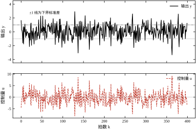
图 62-4 是本轮仿真的实测波形（d=1、N=6000、seed=5）。上半图是 y，两条虚线是 \pm1——也就是 \pm\sigma_e，最小方差下界对应的标准差。可以看到 y 的大部分时间都夹在这两条线之间，偶尔冲出去到 \pm2 附近：这不是控制失败，而是白噪声的固有分布，正态分布的 3\sigma 事件本来就会出现。
下半图是 u。它的幅度明显大于 y，而且动作频繁、方向来回切换。这就是 §62.1.3 说的代价在时域里的样子：输出每抖一点，控制量就反着抖 1/b 倍。实测统计：\operatorname{var}(y)=1.0119、\operatorname{std}(y)=1.0059、\max|y|=3.567、\operatorname{var}(u)=7.9334，控制量的总变差（相邻拍差值绝对值之和）达 18251.5。
作为对照，同一段噪声下：
三个对照说明一件事：方差与控制变差之间是一条陡峭的交换曲线。从“不控制”到 k=0.5，方差降了 56%，控制变差只花了 2772；再往前走到 MVC，方差再降 28%，控制变差却要再花 15500。收益递减，代价递增，拐点在 k\approx1.5\sim2 附近——这正是 §62.8 用 \lambda 要瞄准的区间。
式 (62-6) 的新息递推是有状态的。上电时 e[-1] 未知，y[-1] 也未知，只能置零。这带来两个后果：
第一，前 d 拍控制量无效。d 拍之前，对象还没收到任何控制作用，输出完全由初值和噪声决定。若初值不为零（比如从手动切换过来），这段的输出会很大。
第二，方差统计要丢掉预热段。本章所有仿真的 WARM=200，即前 200 拍不计入统计。这个数字不是随便定的：a=0.8 时初值的影响按 0.8^k 衰减，200 拍后是 0.8^{200}\approx4\times10^{-20}，完全可以忽略；a=0.99 的慢对象则需要 2000 拍以上。
工程上的做法不同：不是“等它自己收敛”，而是在切换瞬间把历史填满。从手动切自动时，把 u 的历史缓冲全部填成当前手动输出值，把 y 的历史填成当前测量值，e 的历史清零。这样控制器一投入就在一个自洽的状态上，不会因为“历史是零、现实不是零”而产生一个大的初始动作。切换冲击是随机控制器投运时最常见的问题，原因几乎总是这一条。
三个容易踩的坑，都与“方差很小”有关。
环形缓冲。 延迟用长度为 d 的环形缓冲实现，索引 k\bmod d，不要用数组搬移。搬移在 d 大时会占掉大部分中断时间，而且容易写出差一错误。
量化噪声。 当输出方差被压到很小（比如 10^{-3} 量级），12 位 ADC 的量化噪声（相对满量程 1/4096）就可能成为主导。这时继续调控制器没有意义——下界已经不是噪声下界，而是量测下界。判断方法：把传感器短接，看读数的方差；若它与闭环方差同量级，问题在量测不在控制。
单精度。 式 (62-33) 的系数 g_0、b f_i 可能相差几个数量级（d 大、a 小时），单精度浮点的舍入误差会在 d 次累加后显现。d\le5 时通常无碍，d 更大或系数跨度超过 10^4 时改用双精度，或者把式子改写成“先归一化再累加”。
本章的 code/ch062_sim.py 里，MVC 类只有三十行，结构就是 §62.5.1 的多项式形式：
__init__ 里把 a,b,c,d 存下来，按式 (62-11)、(62-12) 预计算 F、G，并预计算控制律的系数；reset() 清空 u 的历史缓冲与输出记录；step(y) 按式 (62-33) 算 u，把 u 推入缓冲，返回。三个方法之外没有任何东西。这个规模和“三行差分方程”的说法是一致的：随机控制的理论很重，实现很轻。真正决定成败的是参数从哪来、模型对不对，而不是代码写得多巧。
对照 §62.12 的完整代码可以看到，脚本里真正占篇幅的是仿真循环、指标计算与失配扫描，控制器本身反而是最短的一段。这个比例是有意为之——它是本章立场的代码版本。
本章的 d 被当成一个确定整数：这一拍发出的 u，固定在第 d 拍到达输出。真实系统的定时没有这么整齐：PLC 扫描周期在负载重时被拉长，通信总线偶发重传，多任务调度让控制任务晚启动几毫秒。结果是同一个 u，有时早一拍到、有时晚一拍到。
这等价于把 d 变成一个随机变量，而后果不是“平均差一点”，是可能直接失稳。用本章标称参数算一下：按 d=1 设计的控制律是 u=-2.8y，若某一拍这个 u 晚了一拍才到，闭环变成
y[k]=0.8\,y[k-1]-1.4\,y[k-2]+e[k]+0.6\,e[k-1]
特征方程 z^2-0.8z+1.4=0 的根是 0.4\pm1.114\mathrm{j}，模长 1.183。出了单位圆。 也就是说，一条按 d=1 设计的回路，只要延迟偶尔变成 2，就有可能从“最优”直接跌到“发散”——中间没有“性能略降”这个缓冲档。这与 §62.6.4 说的“\rho 靠近 -1 时方差爆炸”是同一个机理，只是这里多了一个延迟项，越界来得更突然。
三条对策，按成本从低到高：
第一，在 d 里预留半拍。 若抖动幅度约为半个采样周期，按 d+1 设计。代价是保守（表 62-1：d 从 1 到 2，下界涨近三倍），但比“偶尔用错一拍”安全。这条只适合抖动幅度已知且稳定的场合。
第二，用时间戳判断，而不是用“这一拍”。 每个采样值带上采样时刻，控制器按“从采样到执行经过了多少拍”选控制律的延迟项，而不是假设固定 d。这需要控制器内部维护两套系数（对应 d 与 d+1），实现上多几十行，但把抖动从“模型误差”变成了“已知的切换”。
第三，从根上消除抖动。 提高采样率让抖动的相对幅度变小，或者把控制任务放到独立的实时核上。这一条最贵，但它是唯一治本的——前两条都只是把抖动的影响压到可接受。
判断要不要做：算抖动幅度与采样周期之比。小于 5% 可以忽略；5%～20% 用前两条；超过 20% 说明这个平台不适合跑随机控制——因为 §62.6.3 的增益悬崖只留给 28.6% 的余量，而抖动一项就可能吃掉大半。
这一节用四组实测回答一个问题：MVC 的性能由什么决定？ 答案不是“控制器写得好不好”，而是“模型对不对、延迟是多少、参数会不会变”。四组实验分别对应延迟、增益失配、闭环极点、参数跳变，它们指向同一个结论。
所有实验共用标称参数 a=0.8、b=0.5、c=0.6、\sigma_e=1、d=1，除非另行说明。控制器按标称参数设计，对象参数在仿真里单独改动——这正是现场的情形：控制器只能按它以为的模型算，真实对象不受它控制。
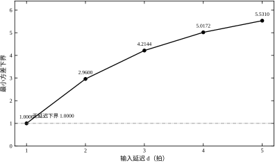
图 62-5 是表 62-1 的曲线版，横轴 d 从 1 到 5，纵轴是下界。五个点是 1.0000、2.9600、4.2144、5.0172、5.5310。补上后两个：d=4 时 g_0=0.7168、d=5 时 g_0=0.5734，两个值都由 g_0=a f_{d-1}+c\,\delta_{d,1} 算出，与仿真无关。
曲线的形状是“先陡后平”，这是本章最值得记住的一张图。增量依次是 1.9600、1.2544、0.8028、0.5138，比值恰好是 a=0.8（增量比），也就是每次乘 0.64。§62.2.3 已经解释过机理：a 决定对象“记住”过去多久，越早的扰动越容易被对象自己消化。
工程含义有两层。第一层是第一拍延迟最贵：把 d 从 2 降到 1，下界从 2.96 降到 1.00，收益 66%；把 d 从 5 降到 4，收益只有 9.3%。第二层是延迟的测量精度要求：既然第一拍最贵，那么把 d 从 1 误判成 2（或反之）就是灾难性的，而把 4 误判成 5 只是小损失。这与 §62.3.3 说的“估小危险、估大浪费”是同一件事的定量版本。
还有一个反直觉的现象：d 越大，控制量方差越小（表 62-2：7.90、5.06、3.24）。延迟越长，控制器能干预的拍数越少，动作自然越少。所以“这个回路控制量很安静”不等于“控制得好”，可能只是“它管不了”。
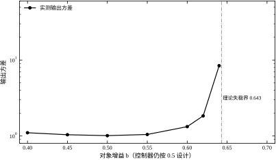
图 62-6 的横轴是真实增益 b 相对模型值 0.5 的偏离，纵轴是输出方差。曲线在左侧平缓、在右侧陡然上升，然后断掉——断点就是发散。
数据来自实验 5（N=6000、seed=11）：
同一张图上，+30\% 是悬崖，-55\% 只是斜坡。 §62.3.6 已经给出机理：闭环极点 \rho=a-(a+c)b/\hat b，真实增益偏大使 \rho 向 -1 走，偏小则向 +a 走。c=0.6 时界线在 b/\hat b=1.2857，与实测的 +30\% 发散完全吻合。
这条曲线还解释了现场一个常见困惑：为什么同一套参数在 A 设备上很好，到 B 设备上就振荡？ 如果 B 设备的执行器增益比 A 大（阀门口径大一号、变频器上限高一点、液压缸面积大），那就正好落在悬崖一侧。此时正确的动作是把控制器里的 b 改大（相当于把增益标定对），而不是“把控制器调软一点”——后者会连带把正常工况的性能一起牺牲掉。
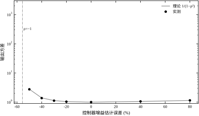
图 62-7 把失稳过程画了出来。为了能解析对照，这组实验取 c=0，此时闭环极点与方差都有闭式：
\rho=a\,\frac{\hat b-b}{\hat b},\qquad \operatorname{Var}(y)=\frac{\sigma_e^2}{1-\rho^2} \tag{62-34}
控制器用 \hat b 设计，真实增益仍是 b=0.5。表 62-5 是实验 6 的完整结果（N=4000、seed=13）。
| \hat b | 相对真值 | \rho | 理论方差 | 实测方差 |
|---|---|---|---|---|
| 0.90 | +80\% | +0.3556 | 1.1447 | 1.1503 |
| 0.70 | +40\% | +0.2286 | 1.0551 | 1.0623 |
| 0.50 | 0 | 0 | 1.0000 | 1.0041 |
| 0.40 | -20\% | -0.2000 | 1.0417 | 1.0389 |
| 0.35 | -30\% | -0.3429 | 1.1332 | 1.1233 |
| 0.30 | -40\% | -0.5333 | 1.3975 | 1.3745 |
| 0.25 | -50\% | -0.8000 | 2.7778 | 2.7538 |
| 0.2222 | -55.6\% | -1.0002 | \infty | 18291.0 |
| 0.20 | -60\% | -1.2000 | \infty | 发散 |
表 62-5 有三处值得细看。
第一，理论与实测在整张表上吻合到 1% 以内（除临界点外）。\rho=-0.5333 时理论 1.3975、实测 1.3745；\rho=-0.8 时理论 2.7778、实测 2.7538。这说明式 (62-34) 抓住了主要机理，不是事后拟合。
第二，\rho 靠近 -1 时方差按 1/(1-\rho^2) 爆炸。\rho=-0.8 时方差已是 2.78，\rho=-0.95 时会到 10.3。所以“还没发散”不等于“还能用”：\hat b=0.25 这一档虽然收敛，方差是下界的 2.78 倍，相对不控制（6.78）只拿回了 69% 的可降空间，剩下 31% 被增益误差吃掉了。
第三，临界点 \hat b=0.2222 处实测 18291。这个数字没有物理意义，它只是“还没溢出”的最后一刻。真正该记的是界线本身：\hat b/b=0.444，即模型低估增益超过 55.6% 就失稳。这与图 62-6 里“真实增益高出 28.6% 就失稳”是同一件事——前者按模型说，后者按真实值说，互为倒数关系。
把式 (62-34) 换成设计语言：MVC 的稳定裕度完全由增益误差决定，且只在一侧有边界。 a 的误差以差值形式进入 \rho：a 偏 10%（0.08）只让 \rho 偏移 0.08，方差从 1.0000 变到约 1.006，几乎无感；增益误差则以比例形式放大，直接越界。这就是为什么 §62.3.4 强调“c 要单独估、b 要认真估”，而 a 的精度可以放宽。
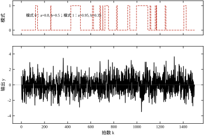
现场还有一类更麻烦的失配：参数不是“偏了”，而是“在两个值之间跳”。比如两套泵轮流投运、换热器结垢与清洗周期、负载在轻载与重载之间切换。这类系统适合用马尔可夫跳变模型（§62.2.8）。
实验 7 设两模式：模式 0 为 (a,b,c)=(0.8,0.5,0.6)，模式 1 为 (0.95,0.35,0.6)，转移矩阵
P=\begin{bmatrix}0.98&0.02\\0.05&0.95\end{bmatrix}
即模式 0 平均停留 50 拍，模式 1 平均停留 20 拍。图 62-8 上半是模式序列，下半是输出。四种设计口径的结果在表 62-6（N=8000、seed=17）。
| 设计口径 | 输出方差 | 说明 |
|---|---|---|
| 按模式 0 设计，真实系统跳变 | 1.0946 | 可用 |
| 按模式 0 设计，只在模式 0 运行 | 0.9939 | 最优 |
| 按模式 0 设计，只在模式 1 运行 | 1.3278 | 变差但稳定 |
| 按模式 1 设计，真实系统跳变 | 发散 | 灾难 |
表 62-6 的不对称性可以用一个式子算出来。用模式 i 的参数设计、在模式 j 上运行，闭环极点是
\rho_{ij}=a_j-(a_i+c)\,\frac{b_j}{b_i} \tag{62-35}
代入：\rho_{01}=0.95-1.4\times0.35/0.5=0.95-0.98=-0.03，几乎落在原点，所以“按模式 0 设计、在模式 1 上跑”勉强稳定（实测 1.3278，多出来的部分是切换瞬态）；\rho_{10}=0.8-1.55\times0.5/0.35=0.8-2.214=-1.414，直接出界，所以“按模式 1 设计”必然发散。
机理很清楚：模式 1 的对象增益小、惯性大，按它设计出来的控制器增益特别高（(0.95+0.6)/0.35=4.43，是模式 0 的 3.2 倍）。这个高增益一旦作用在增益更大的模式 0 上，环路增益就超过 2。
这条结论的工程版本是：跳变系统要按“增益最大的模式”设计控制器，而不是按“最常出现的模式”或“平均参数”。 按平均参数设计在这类系统上几乎总是错的，因为稳定性由最坏模式决定，性能才由平均模式决定。
把 §62.6.2 到 §62.6.5 的结论压成三条可以贴在墙上的判据：
三条判据都不需要在线辨识，只需要一张表和一个计算器。它们的价值在于：把“稳不稳”从经验判断变成了可以事先算出的数。
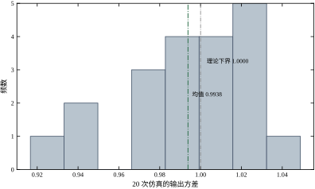
图 62-9 是同一条设计做 20 次独立运行（每次 3000 拍）的方差直方图。统计：均值 0.9938、标准差 0.0313、最小 0.9167、最大 1.0489，理论下界 1.0000。
这张图要说明两件事。
第一，单次运行的方差可以低于下界，最低 0.9167，比下界低 8.3%。这不违反物理——样本方差是随机量，围绕真值波动，20 次里出现一两次偏低完全正常。所以看到“实测 0.92，低于理论下界”时，不要急着怀疑推导，先看样本量和重复次数。
第二，均值的偏差只有 0.6%（0.9938 对 1.0000），20 次的分布宽度约 \pm3\%。这意味着判断“是否达到下界”需要至少 10 次独立运行，或者一次足够长的运行（N>10^5）。用一次 1000 拍的仿真去论证“我的控制器比下界好 5%”，在统计上是站不住的。
工程验收同理：现场采集一段数据算出方差，与仿真值差 10% 以内都算一致；差 30% 以上才说明模型或实现有问题。不要用单段数据的小差异去调模型，那是把噪声当信号。
§62.6.7 用了 20 次运行才敢说“均值 0.9938”。这一小节把这个“敢”字变成算式：单次估出的方差，误差有多大？
样本方差的相对标准差有一个常用的近似：\sigma(\hat V)/V\approx\sqrt{2/N_{\text{eff}}}，N_{\text{eff}} 是有效独立样本数。取 N=3000，\sqrt{2/3000}=2.6\%；实测 20 次的相对标准差是 0.0313，即 3.1%。两个数差 0.5 个百分点，多出来的部分正是噪声的相关性——c=0.6 的扰动相邻拍不正交，N_{\text{eff}} 比 N 小一点。
这条近似的实用价值在“反推需要多长的数据”。要把方差估到 1%，需要 N\approx2/(0.01)^2=20000 拍；要估到 3%，3000 拍够了。所以：
第三条最容易被忽略。能用解析式算的，不要用仿真去“验证”一个小差别——仿真验证的是量级，解析式给的是精确值。本章表 62-5 之所以把“理论方差”和“实测方差”并排，就是让读者看到：两列在 1% 以内吻合，而它们的差正好是这一节算出的统计误差量级。
现场的情况更麻烦：现场只有一段数据，N 由采样周期和记录长度决定，不能想加就加。一个 1 s 采样、记录 30 分钟的回路只有 1800 拍，相对误差约 3.3%；若噪声相关性更强（c 接近 1），误差还会更大。所以现场比对仿真与实测时，10% 的门槛不是拍脑袋定的，而是“3 倍统计误差”的自然结果。
方差是“长期平均”，报警看的是“单次最大”。这两个量不是一回事，也不是简单的倍数关系。表 62-8 给了很好的材料：\tilde\lambda 从 0 到 20，标准差从 1.00 涨到 2.36（2.4 倍），而 \max|y| 从 4.06 涨到 8.42（2.1 倍）。
倍数不一样，说明峰值不是跟着标准差线性走的。对高斯样本，N 个独立样本的最大值期望约为 \sigma\sqrt{2\ln N}。本章实验 N=6000（去掉预热后约 5800），\sqrt{2\ln 6000}=4.17。拿它去对表 62-8：
第一行吻合，说明高斯的假设在 MVC 闭环下基本成立；第二行偏低，是因为 \tilde\lambda 大时输出强相关，6000 拍里“真正独立”的样本远少于 6000，\sqrt{2\ln N_{\text{eff}}} 自然小一些。相关越强，峰值相对标准差越低——这与 §62.6.8 里“有效样本数”是同一件事的两个侧面。
两条工程推论：
第一，报警线不能按“3 倍标准差”拍。 3σ 在 6000 拍里几乎必然被打穿——按上面的估算，6000 个样本的最大值期望就在 4σ 附近。报警线的正确取法是反推：先定“一年允许误报几次”，再换算成对应的分位数，而不是“这批数据没超就安全”。
第二，记录越短，峰值越低估。 \sqrt{2\ln N} 随 N 只按对数增长：N=6000 是 4.17，N=100 只有 3.03。若验收只看了 100 拍数据、发现最大偏差 3.1σ，就断定“绝不会超过 4σ”，那是把记录长度当成了物理边界。“从来没超过 5”这句话，在统计上只等价于“记录还不够长”。
反过来说，这也解释了为什么 §62.8.3 里 \lambda 的第四条读法值得单独列出来：\max|y| 随 \lambda 单调上升。保守控制的方差小、峰值反而大，因为控制器不管了，扰动可以连续几拍同向累积出一个大偏差。选 \lambda 时若只盯方差，就会把报警余量悄悄用完。
本章的模型有四个参数 a,b,c,d，控制器有一个设计参数 \lambda，噪声有一个尺度 \sigma_e。它们的作用完全不同，混在一起谈“调参”必然混乱。表 62-7 先给结论，后面逐条解释。
| 参数 | 物理含义 | 误设 10% 的后果 | 敏感度 | 能否现场辨识 |
|---|---|---|---|---|
| a | 对象惯性（记忆长度） | \rho 偏移 0.08，方差变 0.6% | 低 | 容易 |
| b | 对象增益 | 环路增益变 10%，单侧失稳 | 高 | 需标定 |
| c | 噪声形状（相关性） | 下界与等效增益同时变 | 中 | 容易（标量 RLS） |
| d | 延迟拍数 | 下界翻倍或控制失效 | 极高 | 需专门测 |
| \sigma_e | 噪声强度 | 方差整体缩放 | 无（线性） | 容易 |
| \lambda | 控制量的价格 | 性能权衡点移动 | 连续可调 | 不需要辨识 |
这张表最重要的一列是“敏感度”。它告诉你力气该往哪使：a 和 \sigma_e 估得粗一点没关系，b 和 d 必须准。这与很多教材的叙述顺序相反——教材从 A 讲起，工程上却最该先钉死 d 和 b。
a 是对象自己回落到零的速度。a=0.8 意味着“这一拍的偏差，下一拍还剩 80%”，时间常数约 1/(1-a)=5 拍。它通过 F 的递推 f_k=(a+c)a^{k-1} 影响两件事：延迟的边际代价（按 a^2 递减）和下界的绝对值。
a 的误设为什么影响小？因为它以差值形式进入闭环极点。d=1、c=0 时 \rho=a_{\text{true}}-a_{\text{model}}，a 偏 0.08 只让 \rho 偏移 0.08，方差从 1.0000 变到 1.0064。对比之下，b 的误差以比值形式进入，偏 10% 就是环路增益偏 10%，靠近边界时后果被 1/(1-\rho^2) 放大。
但 a 接近 1 时要小心。a=0.99、c=0.6 时，F 的系数几乎不衰减（1、1.59、1.574、1.558、1.543），d=5 的下界已经超过 10，是 a=0.8 时的两倍。这时“延迟的边际代价”几乎不递减，每一拍延迟都同样贵。a 越接近 1，延迟越不能容忍，这是慢对象（大惯量、大热容）在随机控制里特别难做的根本原因。
b 是输入增益，也是 MVC 里唯一出现在分母上的对象参数（式 62-15 的 -(a+c)/b）。它在两个地方起作用：
这两点合起来解释了 §62.6.3 的不对称：b 偏大（真实值大于模型）让 \rho 向 -1 走，b 偏小让 \rho 向 +a 走，后者永远在圆内。
现场最常出现的 b 误差来源，按频率排序：
第一条最危险，因为它把工作点漂移伪装成“随机扰动”。诊断方法：在几个工作点上分别做阶跃，看 b 是否一致；不一致就说明有非线性，需要增益调度或前馈（第 58 章的增益调度思路可以直接借用）。
c 是本章唯一一个“看起来抽象、实际上决定收益”的参数。它的作用有三层：
第一层，决定扰动方差。 \operatorname{Var}(e[k]+c\,e[k-1])=(1+c^2)\sigma_e^2。c=0.6 时是 1.36 倍，c=0.9 时是 1.81 倍（图 62-1）。所以同样标称“\sigma_e=1”的两条回路，实际抖动可以差 80%。
第二层，决定可抵消的比例。 c=0 时扰动不可预测，d=1 的 MVC 只能把输出压到 \sigma_e^2——这就是全部，没有额外收益。c>0 时，g_0=a+c 让控制律的增益变大，控制器“提前”抵消一部分。极端地，a\to1 且 c\to1 时 g_0\to2，控制律增益翻倍。
第三层，决定稳定裕度。 §62.3.6 已经算过：c 从 0 到 0.6，失稳界线从 b/\hat b=2.25 压到 1.2857。噪声相关性越高，控制器越“敢”，也越脆。
c 的估计相对容易（§62.3.4 的标量 RLS，标准差 0.0023），但要注意 §62.4.4 的警告：c 是“采样后的形状”，换采样周期必须重估。c 还有一个上限：MA(1) 只能表达 |\rho_1|\le0.5，慢漂移必须用高阶 C。
d 是唯一一个整数参数，也是唯一一个“错一拍就翻倍”的参数。它的作用全部体现在 F 的长度上：d 决定有多少拍扰动无法干预，下界就是这些拍上的方差之和。
d 的三个来源要在辨识时分开：
第三项最容易被漏掉。气动调节阀的行程时间常在 1～3 s，若采样周期 0.5 s，光阀门就贡献 d=2\sim6。诊断方法：给一个阶跃，看流量（不是阀位）什么时候开始动。
优化方向也因此很清楚：与其在控制器上想办法，不如把这三项各砍一半。换快速阀、把计算搬到更靠近执行器的位置、缩短总线周期——这些“非控制”的改动，收益往往十倍于算法优化。§62.6.2 的数字是最好的论据：d 从 2 降到 1，下界降 66%。
\sigma_e 是新息的标准差。它只做一件事：把整个方差按 \sigma_e^2 缩放。下界、闭环方差、控制量方差全部与 \sigma_e^2 成正比。
这意味着：\sigma_e 估错不会改变最优控制器。式 (62-14) 里根本没有 \sigma_e——控制律与噪声强度无关。这是一个很重要的性质：噪声大不代表要调控制器，只代表“输出会更抖”。
它也有一个实用推论：归一化。把 y 除以 \sigma_e 再做设计，所有公式里的 \sigma_e 都变成 1，数字更好读，也更容易跨回路比较。本章的仿真就是这样做的（\sigma_e=1）。
\lambda 是 GMV 里唯一一个“纯设计”参数，不是辨识出来的。式 (62-21) 是
u[k]=-\frac{b\,\hat y[k+1]}{b^2+\lambda} =-\frac{\hat y[k+1]}{b}\cdot\frac{1}{1+\lambda/b^2} \tag{62-36}
右端第二个等号把结构说清楚了：\lambda 的作用就是给 MVC 增益乘一个折扣因子 1/(1+\tilde\lambda)，其中
\tilde\lambda=\frac{\lambda}{b^2} \tag{62-37}
是无量纲的“相对价格”。\tilde\lambda=1 时增益减半；\tilde\lambda=3 时增益降到四分之一；\tilde\lambda=19 时降到二十分之一。
\lambda 本身没有通用含义，\tilde\lambda 才有。 本章 b=0.5、b^2=0.25，所以 \lambda=0.25 对应 \tilde\lambda=1。若换一个 b=2 的对象，同样“增益减半”要取 \lambda=4，差 16 倍。现场交接参数时只说“\lambda=0.25”是没意义的，必须连 b 一起说，或者直接给 \tilde\lambda。
§62.8 的扫描表会看到，\tilde\lambda 从 0 扫到 20，输出方差从 1.00 单调升到 5.57，控制方差从 7.83 单调降到 0.045——这是一条完整的交换曲线，\lambda 只是在这条曲线上选一个点。
式 (62-20) 里的 P、R 是设计者选的多项式，本章一直取 1。它们的作用与 \lambda 不同：
工程上 P 用得少，因为一阶对象的波动没有明显的频段选择；R 用得也不多，因为随机控制的主战场是调节（设定值不变），跟踪问题交给第 44 章的 PID 或第 58 章的 MPC 更合适。本章不展开 P、R，只提醒一点：它们与 \lambda 不是一回事，\lambda 罚的是控制量本身，P 罚的是“输出的某个滤波版本”。
四个参数都能估，但估它们的成本完全不同。这一小节把“误差造成的损失”与“测量的成本”摆在一起，回答一个很实际的问题：有限的标定时间该花在哪个参数上。
先看损失。把本章各处的实测与解析结果按“参数偏一点，方差变多少”排一列：
排序一目了然：d\gg b>c\gg a。差三个数量级。
再看成本。a 最便宜——一次阶跃响应，读时间常数即可，甚至从历史趋势曲线上目测都能估到 20% 以内。d 最贵——要互相关，还要把纯延迟、计算延迟、执行器响应三个来源分开核（§62.3.3）。b 次贵——三个工作点各做一次阶跃，还要保证工况不变。c 最麻烦——要先有干净的 a,b,d，再用 RLS 跑一千拍（§62.10.4）。
两者相乘，就得到该花力气的地方：
第一，d 的测量要当成一件正式工作做，不能“估摸着填”。 它的损失最大、成本也最高，但正因为损失大，这笔钱必须花。一个可行的省力办法是先在闭环数据上做互相关粗估，再用一次开环小阶跃确认——两步的成本加起来不到半天，而把 d 填错一拍的代价是整个改造白做。
第二，b 要“标”不要“估”。 它的危险是单侧的：真实增益比模型高会失稳，比模型低只是变差。所以标定的目标不是“最准”，而是模型值宁可偏高一点。§62.10.5 说的“取三个工作点里最大的 b”就是这个意思——用最大增益当模型，等价于保证 b/\hat b\le1，永远落在安全侧。
第三，c 估不准时，取偏小的值。 c 进入控制律是 (a+c)/b，估大了增益就大，裕度就小；估小了只是保守一点，方差多几个百分点。这个“不对称的保守方向”与 b 恰好相反——b 要往大取、c 要往小取，两者都是为了让等效增益不偏大。
第四，a 不必精估。 偏 10% 只让方差动 0.6%，比仿真的统计误差还小。花时间去精估 a 是浪费——除非 a 已经接近 1（长惯性对象），那时它对 d 的灵敏度有放大作用（§62.2.3 的表里 a=0.99 一行），才值得认真估。
这张“灵敏度—成本”账说明一件事：随机控制的标定预算不是平均分配的。 把力气按 d:b:c:a 的顺序投下去，同样的工时能换来大得多的可靠性；反过来，把时间花在精估 a 上、d 靠猜，是最常见的资源错配。
随机控制的“调参”分两半，性质完全不同：
把两半混在一起，就会出现本章开头那种场面：输出抖，于是加大增益；加大增益后抖得更厉害（因为对象增益估错了），于是再加大——最后阀在振、输出也在振。这不是调参失败，是把模型问题当成了参数问题。
顺序应当是 d\to b\to c\to a\to\lambda\to 限幅。理由逐条：
这个顺序与“从 a 开始讲模型”的教材顺序相反，但与现场排查顺序一致：先问“延迟多少”，再问“增益多少”，最后才关心“惯性多大”。
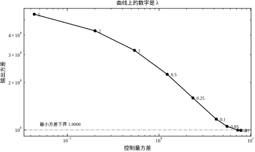
图 62-10 是实验 3 的结果（N=8000、seed=7）：横轴控制方差、纵轴输出方差，双对数坐标，每个点对应一个 \lambda。曲线从左上（\lambda=0，输出最平、控制最猛）走到右下（\lambda=5，几乎不控制）。表 62-8 是同一组数据的表版，并补上无量纲价格 \tilde\lambda=\lambda/b^2 与总变差。
| \lambda | \tilde\lambda | \operatorname{var}(y) | \operatorname{var}(u) | \max\vert y\vert | 总变差 |
|---|---|---|---|---|---|
| 0.00 | 0 | 0.9989 | 7.8312 | 4.062 | 18203.2 |
| 0.01 | 0.04 | 1.0034 | 7.2540 | 4.117 | 17237.9 |
| 0.05 | 0.20 | 1.0620 | 5.5606 | 4.296 | 14251.4 |
| 0.10 | 0.40 | 1.1828 | 4.2494 | 4.444 | 11734.9 |
| 0.25 | 1.00 | 1.6201 | 2.3692 | 5.052 | 7699.2 |
| 0.50 | 2.00 | 2.2919 | 1.2476 | 5.944 | 4907.2 |
| 1.00 | 4.00 | 3.2644 | 0.5502 | 6.787 | 2847.6 |
| 2.00 | 8.00 | 4.3594 | 0.2048 | 7.540 | 1548.4 |
| 5.00 | 20.00 | 5.5727 | 0.0447 | 8.421 | 654.0 |
表 62-8 有四条读法。
第一，左上角很平。 \tilde\lambda 从 0 增到 0.4，输出方差只从 0.9989 涨到 1.1828（+18%），而控制方差从 7.83 掉到 4.25（−46%）。前 0.4 的“价格”几乎白送——这是整条曲线上最划算的一段。
第二，中间段是主战场。 \tilde\lambda 从 0.4 到 4，输出方差翻近三倍（1.18 → 3.26），控制方差降近八倍（4.25 → 0.55）。这一段对应“从激进到保守”的完整过渡，工程选点多半落在这里。
第三，右下角趋近不控制。 \tilde\lambda=20 时输出方差 5.57，已经接近不控制的 6.78；控制方差 0.045，等价于“基本不动”。再加大 \lambda 没有意义。
第四，\max|y| 随 \lambda 单调上升。 从 4.06 到 8.42。这条列容易被忽略：保守控制的方差小、但偶发的大偏差更大，因为控制器“不管”了，扰动可以自由累积几拍。若现场有软限报警，\lambda 太大反而更容易触发。
把式 (62-36) 在 d=1 时展开，控制律是 u=-k\,y，其中
k=\frac{a+c}{b}\cdot\frac{1}{1+\tilde\lambda} \tag{62-38}
本章 a=0.8、c=0.6、b=0.5，(a+c)/b=2.8。于是 \tilde\lambda=0 对应 k=2.8，\tilde\lambda=1 对应 k=1.4，\tilde\lambda=4 对应 k=0.56。
换句话说，d=1 的整个 GMV，在实现上就是一个比例控制器，\lambda 只是在选 P 增益。 这与第 44 章的 P 控制没有结构差别，唯一的区别是：这里的增益是算出来的，不是试出来的；而且它把“该用多大增益”与“愿意付多少控制代价”分开成了两件事。
这个事实有两个用处。第一，它让现场工程师容易接受：你不需要换控制器，只需要换一个更好的增益。第二，它划清了 MVC 的适用范围：d=1 时它没有超越 P 控制的结构性优势，真正的优势出现在 d\ge2（式 62-16 的预测项）与有色噪声（c 进入增益）这两处。
\lambda 的选择没有唯一答案，但有三条可操作的准则，通常联合使用：
准则一：控制变差预算。 现场最关心的是执行机构寿命，可以用总变差（相邻拍动作绝对值之和）来度量。若阀门检修周期要求总变差不超过 10000（每千拍），查表 62-8，\lambda 应取在 0.10～0.15，对应输出方差 1.18～1.30。
准则二：输出方差目标。 若工艺要求标准差不超过设定值的 1.5%，而设定值 100，则 \operatorname{var}(y)\le2.25。查表，\lambda\le0.5 都满足，此时用法则一收紧。
准则三：最大偏差约束。 若报警线是 \pm6，则 \max|y| 必须留余量。表里 \lambda=0.5 时 \max|y|=5.94 已贴线，\lambda=0.25 时 5.05 尚有 16% 余量。这一条常常是决定性的一条，因为它对应的是“会不会停机”，而不是“波动好不好看”。
三条准则取交集，通常就只剩一两档 \lambda。如果交集是空的，说明工艺要求与执行机构能力不匹配，此时该改硬件，不是继续调 \lambda。
把 §62.8.2 的顺序走一遍，数字全部来自本章实验（同一段噪声、同一初值）。表 62-9 是这五步的账。
| 步骤 | 做法 | \operatorname{var}(y) | \operatorname{var}(u) | 总变差 | 结论 |
|---|---|---|---|---|---|
| 1 | 不控制 | 6.7812 | 0 | 0 | 基准 |
| 2 | 比例 k=0.5 | 2.9993 | 5.9950 | 2771.6 | 有效但不够 |
| 3 | 比例 k=1.6 | 1.3978 | 4.1950 | 9208.8 | 接近最优 |
| 4 | 标定后 MVC（d=1） | 1.0119 | 7.9334 | 18251.5 | 方差最小，动作翻倍 |
| 5 | GMV \lambda=0.25 | 1.6201 | 2.3692 | 7699.2 | 折中方案 |
五步的顺序值得注意。第 2、3 步是“用现有手段先摸底”：一个手调的比例增益已经把方差从 6.78 压到 1.40，拿回了 93% 的可降空间。第 4 步的 MVC 只比它再好 27%，代价是动作总变差翻倍。第 5 步反过来，牺牲 16% 的方差，换回 58% 的动作量。
如果只看第 4 步，会得出“随机控制代价太大”的结论；做完第 5 步才知道，真正的答案是“用 MVC 算增益，用 GMV 定价”。 这也是本章反复强调的立场：MVC 是标尺，GMV 才是产品。
错误一：把 \lambda 当 PID 增益调。 加大 \lambda 使控制变弱，与减小 P 增益同向，但 d\ge2 时它还同时削弱预测项，效果不是等比例的。调 \lambda 之前先确认 d。
错误二：按期望值调 c。 c 是辨识量，不是设计量。有人为了让控制器“更积极”而人为放大 c，结果下界被算小、实际方差对不上，还会让增益裕度变窄（§62.7.4 第三层）。
错误三：d 用拟合残差猜。 拟合残差对 d 不敏感（d 错一拍，残差只多一点），必须用互相关单独测。
错误四：只看均值。 输出均值接近设定值，不代表方差合格。随机控制的目标量是方差，均值由积分环节或前馈保证，两者不是一回事。
错误五：忽略限幅。 设计时假设 u 无界，实机限幅后控制律失效，且历史缓冲里存的若是限幅前的值，误差会累积（§62.5.2）。限幅必须参与设计，不是最后加的保险。
随机控制的调参记录比 PID 更需要留痕，因为参数之间有关联（b 变了，\lambda 的含义就变了）。建议六列，见表 62-10。
| 日期 | d / b / c / a | 控制律 | \tilde\lambda | \operatorname{var}(y) / 总变差 | 备注 |
|---|---|---|---|---|---|
| 03-02 | 1 / 0.50 / 0.60 / 0.80 | 比例 k=1.6 | — | 1.398 / 9209 | 手调摸底 |
| 03-05 | 1 / 0.50 / 0.60 / 0.80 | MVC | 0 | 1.012 / 18252 | 阀动作偏大 |
| 03-06 | 1 / 0.50 / 0.60 / 0.80 | GMV | 1.0 | 1.620 / 7699 | 投运 |
| 03-20 | 1 / 0.55 / 0.58 / 0.79 | GMV | 1.0 | 待复测 | 复标 b，\lambda 由 0.25 改 0.3025 |
最后一行的意义要说清楚：b 从 0.50 复标到 0.55 之后，同样的 \tilde\lambda=1 对应 \lambda=0.3025 而不是 0.25。记录表里写 \tilde\lambda 而不是 \lambda，就是为了让这种复标不产生歧义。
这是本章最容易被重复犯的一个错，值得单独记一笔。现场嫌阀动作多，把 \lambda 从 0.25 一路加到 5，理由是“\lambda 越大控制越温和”。表 62-8 的四行数据说明了后果：
| \lambda | 输出方差 | 控制方差 | \max\vert y\vert | 总变差 |
|---|---|---|---|---|
| 0.25 | 1.6201 | 2.3692 | 5.052 | 7699.2 |
| 0.50 | 2.2919 | 1.2476 | 5.944 | 4907.2 |
| 1.00 | 3.2644 | 0.5502 | 6.787 | 2847.6 |
| 5.00 | 5.5727 | 0.0447 | 8.421 | 654.0 |
阀动作确实降下来了：总变差从 7699 掉到 654，降了 91%。但同时输出方差从 1.62 涨到 5.57（+244%），已经接近不控制的 6.78；\max|y| 从 5.05 涨到 8.42，直接打穿报警线。这不是“调得保守了一点”，是把控制器调成了摆设。
更麻烦的是它的诊断特征容易被误读。验收看到 R=5.57（远大于 1.1），第一反应是“模型错了”。但这时只要看一眼控制方差：0.0447，几乎为零——控制器根本没在动，谈何模型错。 由此得到一条很实用的判据：
这条判据把“模型问题”和“调参问题”一次分开，比单看 R 可靠得多。
正确的收尾不是继续在 \lambda 上找平衡，而是承认“阀动作”与“输出方差”在这条曲线上是硬交换：想要 654 的总变差，就必须接受 5.57 的方差。若两者都不可接受，出路只有两条——换执行器（让阀能承受更多动作），或者改罚项（§62.9.8，罚 \Delta u 而不是罚 u，让同样的方差对应更小的总变差）。
\lambda 是用来“在曲线上选点”的，不是用来“消除阀动作”的。 这句话听起来像文字游戏，但它决定了下一次调参时你会不会又把 \lambda 往上加一格。
MVC 的四个短板——控制量太大、对增益误差太敏感、不能处理约束、不能跟参数漂移——各自有对应的改进路线。表 62-11 先给全景，后面逐条说清“改了什么、解决什么、代价是什么”。
| 路线 | 改什么 | 解决什么 | 代价 | 相关章节 |
|---|---|---|---|---|
| GMV（\lambda） | 指标加控制惩罚 | 动作过大 | 输出方差上升 | 本章 §62.2.6 |
| 极点配置 GMV（P） | 指定闭环极点 | 对消过狠、脆弱 | 要选极点、要解新方程 | 本章 §62.9.2 |
| 自适应 MVC | 在线估 a,b,c | 参数漂移 | 需要激励、可能失稳 | 第 61 章 |
| 带约束 MVC | 限幅、速率限制 | 执行器物理限制 | 需可行解、可能饱和 | 第 58、80 章 |
| 前馈 / 扰动观测 | 加可测扰动通道 | 可测扰动 | 需要测点 | 第 44 章 |
| LQG / 状态空间 | 状态估计 + 最优反馈 | 多变量、量测噪声 | 模型阶次上升 | 第 54 章 |
这张表有一个共同点：每条路线都在“性能”与“某种代价”之间重新画一条线，没有一条能同时拿到所有好处。 选路线的前提是先认清当前最痛的是哪一条。
§62.2.9 的结论是：P=1 时闭环极点被 C 完全对消，闭环传递函数退化成 F——一个有限脉冲响应。这样做在数学上最优，在工程上却意味着“没有缓冲”：任何模型误差都会让被消掉的极点漏出来。
改进办法是在指标里加一个输出加权 P(z^{-1})，重解 Diophantine。结论是（推导略，见 Clarke–Gawthrop 的原始文献）：闭环特征多项式从 C 变成
P(z^{-1})\,C(z^{-1}) \tag{62-39}
也就是说，P 的零点直接成为闭环极点。若取 P=1+p_1z^{-1}，就多了一个可配置的极点；取 P=(1-\alpha z^{-1})^k，可以把闭环调成指定的时间常数。
这个改动的作用不是“让方差更小”（方差一定变大），而是让闭环对模型误差更宽容。原因很直观：原来被对消的 C 现在与 P 一起构成闭环动态，模型误差只让极点偏离 P 的零点，不会让整个回路失去缓冲。代价是要重新解一次 Diophantine 方程（P 进入后 F、G 的阶次都变），而且 P 的零点必须选在单位圆内。
工程上 P 用得不多，原因和 §62.7.8 一样：一阶对象的极点选择空间很小，把 C 的零点直接留着（P=1）往往就是可接受的。但对象阶次高、或者对消的极点靠近单位圆时，P 是必须的——否则被消掉的慢极点一旦漏出来，闭环会出现设计时完全没预料到的长尾。
参数会漂移的场合（结垢、磨损、工况切换），固定参数的 MVC 迟早失配。最直接的办法是在线估 a,b,c，每拍（或每若干拍）重算 F、G 与控制律，这就是自适应最小方差，属于自校正调节器（STR）的一类。第 61 章已经完整讲过 STR 的结构与稳定性条件，这里只说它与本章的接口：
三个必须处理的坑，都与“估计器与控制器的耦合”有关：
第一，激励不足时参数会漂。闭环稳定后 u 与 y 高度相关，RLS 的协方差矩阵会退化成一条线，参数沿这条线滑动而残差不变。表现是“参数乱跳但控制效果不变”，一旦工况变化就突然失稳。对策是协方差重置、方向遗忘，或者周期性注入小激励（第 61 章的 PRBS 可直接用）。
第二，参数更新要有投影。把 \hat b 限制在 [0.85b_0,\,2b_0]、\hat c 限制在 [0,1]，越界就钳住。下界取 0.85 而不是更宽，是因为 §62.6.3 的悬崖就在“真实增益比模型大 28.6%”处——反过来说，模型增益一旦被估到真值的 0.78 倍以下就已越界，投影区间必须比这个更紧。没有投影时，一次坏数据就可能把 \hat b 推到悬崖外。
第三，自适应不能救结构错误。若 d 估错、或扰动入口判错，在线估计只会把参数拉到一个“拟合得好但控制不好”的值。先确认结构，再开自适应——这是第 61 章的主线，也是本章反复强调的“模型问题不能靠调参解决”。
本节不给自适应版本的实测数字：本章的仿真框架是固定参数的，强行加一个自适应环会让所有对照失去可比性。第 61 章有一整套 STR 的实测（含 \gamma 扫描、限幅、滞后），需要数字时应当去那里看。
MVC 的控制律是线性的，执行器却不是：阀门有量程、电机有电流上限、变频器有加减速限制。处理办法分三层，由浅入深。
第一层：输出限幅 + 回灌。 把 u 钳在 [u_{\min},u_{\max}]，并把钳后的值存进历史缓冲（§62.5.2）。这一层只保证“不发错指令”，不保证性能：一旦限幅，闭环实际动态与设计不符，方差会高于下界。诊断特征是“R 在正常工况下接近 1，在扰动大的时段明显大于 1”。
第二层：速率限制。 若执行器有最大变化率，超出时按速率走。速率限制的等效效果是延迟增加：本拍该走完的行程要分几拍走完，闭环看到的 d 变大。所以设计时应当把速率限制折算成“等效 d”，用表 62-1 重新算下界——如果折算后下界翻倍，就说明这个执行器不适合这个回路。
第三层：把约束写进优化。 每拍解一个小型二次规划，在满足 u 与 \Delta u 约束的前提下最小化式 (62-20)。这就是 MPC 的雏形（第 58 章给完整推导，第 80 章给工业实现）。对一阶对象，这个 QP 只有一两个变量，手算都能做；但它带来的好处很大：约束生效时不再是被动饱和，而是主动降级——控制器知道“这一拍走不完”，会提前几拍开始动。
三层的关系是递进的：第一层防错，第二层防磨，第三层防“该提前而没提前”。现场的性价比排序通常是第一层 > 第三层 > 第二层。
本章的扰动都是不可测的（只能从 y 反推）。若扰动有可测的源头——进气温度、环境温度、上游流量——就可以加前馈：测到扰动，按模型算出它将对 y 造成的影响，提前从 u 里扣掉。
前馈与 MVC 的分工很清楚：前馈处理“可测但不可控”的扰动，反馈处理“不可测”的扰动。 两者不冲突，前馈做得好，反馈要处理的方差就小，\lambda 可以取更小（更激进），总性能更好。前馈通道的增益由对象的直流增益决定（b 的倒数），所以它同样依赖 §62.7.3 的增益标定——前馈把 b 的误差从“影响稳定性”变成了“影响稳态偏差”，危害小得多。
第 44 章讲过前馈-反馈复合的整定方法，可以直接搬到随机框架下：前馈通道用静态增益，反馈通道用本章的 GMV，两者的分工不变。
多变量情形下，MVC 推广为 LQG：状态估计用卡尔曼滤波，反馈用 LQR，噪声通过过程噪声与量测噪声的协方差进入。第 54 章给了观测器的完整推导，这里只说三点与本章的对应关系：
所以多变量场合不建议从 MVC 入手，直接从 LQG 或 MPC 开始更现实。本章的方法适合“一个回路、一个主扰动、延迟可数”的场合，这也是它在工业上最常见的存在形式。
Smith 预估（第 47 章、第 107 章）与 MVC 都在处理延迟，但处理的是延迟的不同后果：
两者不替代。一个既有大延迟、又有随机扰动的回路，正确做法是：用 Smith 预估（或 MPC 的内模）处理设定值跟踪，用 GMV 处理稳态方差。若只做其中一件，另一件的问题会在投运后暴露：只做 Smith，稳态抖动依旧；只做 GMV，设定值阶跃时超调依旧。
这也解释了为什么第 47 章与本章要用不同的指标（超调/调节时间 vs 方差）：它们回答的是两个不同的问题。
本章的代价函数罚的是 u[k] 本身（式 62-20 的 \lambda u^2）。这个选择决定了 MVC/GMV 的一个特征：它不管控制量变化得多快。 表 62-8 里 \tilde\lambda=0 的总变差 18203，\tilde\lambda=1 降到 7699——同一套闭环，控制量的大小只差 3.3 倍，而变化量差 2.4 倍。可见“罚 u”对“抖动”的抑制很间接。
现场的物理代价并不总是与 u 的大小成正比。阀门磨损对应的是行程（\sum|\Delta u|），电机发热对应的是力矩（正比于 u^2），泵的汽蚀对应的是开度上下限（约束）。三者不一样，而 \lambda u^2 只对上了中间那一种。
把罚项换成 \lambda(\Delta u)^2，就得到广义预测控制（GPC，第 58 章）的核心差别之一。它的效果可以直接说清：
代价是求解变复杂：罚 \Delta u 后，控制律不再是“一拍一个代数式”，而要解一个带预测时域的优化——这正是 MPC 与 GMV 的分界。本章的 GMV 之所以能写成闭式，靠的就是“只罚当拍 u”这个简化。
工程上的判断很简单：若验收卡在总变差（阀动作太多），先考虑改罚项；若卡在方差，才去调 \lambda。 两者的作用点不同——调 \lambda 是在“性能与控制量大小”之间换，改罚项是在“控制量大小与控制量变化”之间换。把这两件事混为一谈，就会出现“为了让阀少动，把 \lambda 加到 20，结果方差退化到接近不控制”的局面（表 62-8 最后一行：方差 5.57，总变差 654）。
前面九节讲的是原理与数字，这一节讲“明天上班怎么干”。按顺序十件事，前六件在投运前，后四件在投运后。
清单里最容易跳过的是第 1 件和第 7 件。第 1 件不做的后果是“在振荡的数据上辨识”，估出来的参数毫无意义；第 7 件不做的后果是“带着错误的模型直接闭环”，而这在随机控制里通常意味着第一次大扰动就发散。
辨识需要的数据有三条硬要求：稳态、够长、有激励。
稳态指没有趋势、没有工况切换。判据很简单：把数据分成前后两半，两半的均值差小于标准差的一半、方差比在 0.7～1.4 之间，就可以认为稳态。若回路本身在周期性振荡（比如有积分饱和或阀门粘滞），先修好再辨识——振荡的数据会把 a 估到接近 1，让下界虚高。
够长指至少覆盖 10 个对象时间常数。a=0.8 时时间常数约 5 拍，10 个就是 50 拍；但统计要可靠得多，本章的仿真取 6000～20000 拍。现场一般取 1000～3000 拍（按 1 s 采样约 20～50 分钟），这个长度的方差估计误差约 \pm5\%，够用。
有激励指 u 必须有足够的变化。闭环稳态运行时 u 的变化主要来自噪声反馈，幅度小、频带窄，辨识出的 b 往往偏大（回归量方差小，噪声占比高）。标准做法是叠一段 PRBS 到设定值或输出上，详见下一节。
三条要求里，“稳态”和“有激励”看起来矛盾——稳态强调不变，激励强调要变。解决办法是在稳态上叠一个小激励：基线的工况不变，只让设定值在 \pm2\%\sim5\% 内随机跳。这样既保持了工作点，又给了辨识所需的信息。
PRBS 的参数有三个：幅度、位宽、周期长度。
第 61 章给过一个 7 位 PRBS 图样，可以直接复用。要提醒的是：PRBS 必须真的“随机”叠加，不能用方波代替。方波只有两个电平、一个频率，回归量矩阵接近奇异，a 与 b 会被估成一组“能拟合但不对”的值——这是辨识里最常见的自欺。
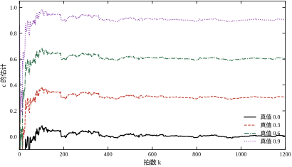
图 62-11 是实验 8 的结果：在 a、b 已知的条件下，用标量 RLS 估 c，四条曲线对应真值 c=0、0.3、0.6、0.9。四条线都在几百拍内进入真值附近，1000 拍后的尾段均值为 +0.0067、+0.3067、+0.6067、+0.9067，标准差都只有 0.0023。
这张图的分量在于“它把随机控制里最抽象的参数变成了一个可以现场测出来的数”。c 不是“噪声相关性”这种只能定性描述的东西，它是一个标量，跑一千拍就能估到千分位。具体步骤：
第 3 步是很好的自检：c 是“最后才该收敛”的参数，它不收敛，几乎总是前面的参数有问题。
一个现场细节：若估出的 c 接近 0，不要立刻下结论“噪声是白的”。先看 e 的方差是否与量测噪声匹配——若 e 的方差远大于传感器噪声，说明扰动确实存在但被 a 吸收了，这时应当提高 A 的阶次（二阶），而不是接受 c=0。
b 是唯一必须“标”而不是“估”的参数，因为它的误差直接决定稳定性。方法是在至少三个工作点上各做一次小阶跃：
非线性的处理有两条路：增益调度（按工作点切换 b，第 58 章的调度思路）或取最坏值（取三个点里最大的 b，按它设计，代价是低负荷时控制偏软）。本章建议后者，因为随机控制对“增益高估”不敏感、对“增益低估”敏感——取最大值正好落在安全侧。
单位问题单独强调一次。b 的量纲是“输出单位/输入单位”，若 u 是百分比、y 是 ℃，b 就是 ℃/%。换一套单位（u 改成 4～20 mA），b 要整体换算，\lambda 也要跟着按 b^2 换算。现场交接时最容易丢的就是这一条。
随机控制器不能“一投了之”。三段式投运是本章推荐的做法：
第一段，手动。 回路在手操下稳定运行，采集辨识数据。这一段的目的只有一个：拿到干净的 y、u。
第二段，影子运行。 控制器在线计算 u，但不输出；把算出的 u 与实际的 u 都记下来，同时用模型预测下一拍的 y，与实测比较。
影子段是整套流程里性价比最高的一步。它能在不影响生产的前提下暴露三类问题：
影子段跑够 500 拍、预测误差的方差与 \sigma_e^2 同量级，才允许进入第三段。
第三段，闭环。 从保守点开始：\tilde\lambda 取 4～8，即增益只有 MVC 的 1/5～1/9。观察 30 分钟，逐步减到设计值。每次减小后看三个量：输出方差是否按预期下降、总变差是否超预算、\max|y| 是否靠近报警线。三者有一个不对，就退回上一档。
这套流程看起来慢，但它把“会不会出事”从一个未知变成了每次只冒一小步的风险。随机控制的事故几乎都发生在“直接从手动切到设计增益”的那一次。
验收用三个数，全部在 §62.6、§62.8 出现过，见表 62-12。
| 指标 | 计算 | 合格范围 | 不合格时查什么 |
|---|---|---|---|
| R | 实测方差 / 下界 | 0.9～1.1 | d、c、计算延迟 |
| 总变差 | \sum\vert\Delta u\vert | 按检修预算 | \tilde\lambda 太小 |
| \max\vert y\vert | 全程最大偏差 | 留 20% 报警余量 | \tilde\lambda 太大 |
三项里 R 是“模型对不对”，总变差是“代价付不付得起”，\max|y| 是“会不会停机”。三者不会同时最优，验收的本质是确认这三项都落在可接受范围内，而不是某一项特别漂亮。
巡检则只需每月做一次 b 与 c 的复标。若 b 变化超过 10%，按新值重算 \lambda（保持 \tilde\lambda 不变）；若 c 变化超过 0.2，重算下界与 F、G。参数复标的频率应当由对象的变化速度决定，不是由制度决定——结垢快的换热器可能每周都要复标，而一个干净的电机回路一年都不用。
场景一：一个成功的改造。 某温度回路，原 PID 下输出标准差 1.4（归一化），阀每秒动作 3～4 次，阀杆三个月磨损一次。按本章流程做：辨识得 d=1、b=0.5、c=0.6，算出 MVC 能把标准差压到 1.0，但控制变差会到 18000 量级（表 62-9 第 4 行）。于是取 \tilde\lambda=1，方差 1.62（比原来差 16%），控制变差降到 7700（比原来少 58%）。投运后阀的动作次数下降一半，输出波动仍在工艺允许范围内。
这个案例的关键不是“方差降了多少”，而是主动用 16% 的方差换了 58% 的动作量。若按“方差越小越好”的思路直接上 MVC，改造会被判为失败——阀磨得更快。
场景二：一次失败的投运。 某流量回路，辨识数据取自夜间低负荷，b 估成 0.35；白天满负荷时实际 b 是 0.55（比模型大 57%）。控制器按 0.35 设计，满负荷时环路增益是设计的 1.57 倍，超过 §62.6.3 的界线，投运当天下午就出现等幅振荡。
复盘有三条：第一，辨识数据只覆盖了一个工作点，违反了 §62.10.5 的三点要求；第二，没有做影子运行，否则预测误差会立刻暴露增益问题；第三，投运从 \tilde\lambda=1 直接开始，没有从保守点切入。三条里任何一条做到，这次事故都不会发生。
这两个场景的共同教训是：随机控制的失败几乎都不是数学错，而是“模型只在某个工作点上对”。数学部分（Diophantine、下界、控制律）是确定的，只要参数对，结果就可预测；而参数对不对，取决于数据采集与标定这些“不数学”的环节。
算法只有一行（u=-(Gy+\sum b f_i u[k-i])/(bf_0)），但从这一行到能在 PLC 里跑的程序，中间有四件事必须补上。它们不影响公式的正确性，只影响“程序跑起来是不是真按公式在跑”。
第一件：无扰切换，手操切自动时不跳。
控制器内部有 u 的历史缓冲。若从手动切到自动时缓冲是全零（或上次投运留下的旧值），第一拍算出的 u 会按“过去几拍 u=0”来补偿——对 d=2 以上的回路，这个补偿量可能很大，切换瞬间就是一个阶跃。正确做法是切换时用实际输出值填满整个 u 缓冲：u[k-1],u[k-2],\dots 全部取当前阀位。这样第一拍的控制量自然等于当前阀位，不会跳。
同样的处理对 y 也适用。若控制器内部存了 y 的历史（GMV 的新息重构需要 y[k-1]），切换时应当用当前测量值初始化，不要在程序启动时留一个零。
第二件：把计算与通信延迟算进 d。
本章的 d 是“从这一拍发出 u 到它影响 y 的拍数”。现场从“采样”到“输出真正到达执行器”通常要跨一个扫描周期：采样、运算、通信、D/A 转换。若这四步耗时接近一个采样周期，那么控制器实际能干预的时刻比设计晚一拍，等效 d 要加 1。
这一条最容易被忽略，因为它在慢过程（T_s=1 s、对象时间常数几十秒）上几乎看不出来，而在快过程上直接决定成败。判据是：把计算延迟折算成拍数 d_c=\lceil t_c/T_s\rceil，设计时用 d+d_c 查表 62-1。d 从 1 变 2，下界从 1.0000\sigma_e^2 涨到 2.9600\sigma_e^2（c=0.6），差近 3 倍——这不是精度问题，是数量级问题。
第三件：历史缓冲存量化后的值。
若输出经过 D/A 或通信字量化（例如 12 位、0.1% 分辨率），那么真正到达执行器的是量化后的 u。控制器内部若存的是未量化的计算值，两者会慢慢分叉：控制器以为阀在 43.27%，实际阀在 43.2%，差的那一点在 d 拍之后进入 y，又被当成扰动去补偿。
在 MVC 这种高增益控制器上，这个分叉会被放大——本章 MVC 的等效增益 2.8，千分之几的 u 误差对应百分之一的 y 偏差，正好落在下界的量级上。做法很简单：先量化，再存缓冲。 与 §62.12.9 说的“限幅要在入缓冲之前”是同一条原则：缓冲里只能存“真正发生的事”。
第四件：退出条件要写死，且退出要无扰。
随机控制器没有“自恢复”能力：模型错了，它不会变保守，只会按错的模型算出更猛的动作。所以必须外挂一层监视：
四条中任一条成立，就自动退回 PID 或手动，并记录现场快照（最近 200 拍的 y、u、模式）。退回时同样要无扰——把 PID 的积分项预置成使输出等于当前阀位的值，否则退回动作本身又是一次扰动。
这四件事没有一件写在控制律里，但它们决定了“设计出来的方差”能不能在装置上兑现。本章所有关于下界的讨论，都以这四件事已经做对为前提。
第一，它给出一个绝对的标尺。 下界 V_{\min}=\sigma_e^2\sum f_i^2 只依赖噪声与延迟，与控制器、与增益 b 都无关。这意味着它是“任何算法都做不到更好”的界线，而不是“这套算法能做到的极限”。前面所有章节的评价指标（超调、调节时间、IAE）都是相对的——换一套参数就变；只有方差下界是绝对的。
第二，结构极简。 式 (62-33) 每拍只需 d+1 次乘法。d=3 的回路在 8 位单片机上跑不满 1% 的 CPU。随机控制的理论门槛很高，实现门槛几乎为零，这个反差在控制领域里很少见。
第三，参数少且都有物理含义。 四个对象参数加一个设计参数，没有“经验系数”。d 是延迟拍数、b 是增益、a 是惯性、c 是噪声相关性、\lambda 是控制的价格。每个参数都能被单独测量或标定，也能被单独质疑。
第四，它能定量回答“延迟值多少钱”。 表 62-1 与图 62-5 给出的不是定性结论，而是“d 从 2 降到 1，下界降 66%”这样的数。这类数字能直接进投资论证：换一台快阀要多少钱、能省多少方差。
第五，它与 GMV 是一体的。 同一个框架里，\lambda=0 是最小方差、\lambda\to\infty 是不控制，中间连续可调。工程师不需要在两套方法之间切换，只需要在一个旋钮上移动。
第六，它有诊断价值。 R=\operatorname{Var}_{\text{sim}}/V_{\min} 这个比值本身就是诊断工具：R\approx1 说明模型对，R\gg1 说明结构错。PID 调参没有这个性质——PID 调不好时，你无法判断是参数问题还是对象问题；而 MVC 的 R 直接把这个判断变成了算术。
第一，控制量太大。 这是最硬的一条。本章标称工况下，输出标准差 1.01，控制标准差 2.82（\operatorname{var}(u)=7.93），控制变差 18251。对一个真实的阀，这意味着阀杆每天往复上万次。MVC 的最优性是用执行机构的寿命换来的。
第二，增益误差单侧悬崖。 真实增益比模型大 28.6% 就发散（c=0.6 时），而小 55% 只是变差。这条不对称边界意味着：任何“增益可能变大”的工况都是风险——结垢初期传热变好、阀门开大后流量增益上升、负荷增加后对象变“灵敏”，全都朝危险方向走。
第三，要求最小相位。 式 (62-14) 的分母有 b，§62.2.9 的对消要求 B、C 都可逆。非最小相位对象（有逆响应、有右半平面零点）不能直接用 MVC——强行用会把不稳定零点搬进闭环。
第四，依赖准确的 d。 d 错一拍，下界可能翻倍，或者控制律对着一拍以前的误差使劲。而 d 恰恰是最难测准的参数（纯延迟、计算延迟、执行器响应三者叠加）。
第五，线性、无约束。 MVC 不知道阀门有量程、电机有电流上限。限幅之后，闭环动态与设计不符，性能没有任何保证。要做约束必须外挂 QP，那时它就已经不是 MVC 了。
第六，只解决调节。 设定值不变时它最优；设定值频繁变化时，它没有积分环节，跟踪会有稳态偏差（除非把 R 设成含积分的形式）。跟踪问题的正解是 PID（第 44 章）或 MPC（第 58 章）。
第七，噪声模型阶次受限。 MA(1) 只能表达 |\rho_1|\le0.5 的扰动。真实的慢漂移（\rho_1>0.8）需要高阶 C，而高阶 C 又让 Diophantine 方程与稳定性分析变复杂。
把缺点翻译成“什么时候不要用”，得到七类场合。它们不是理论上的禁区，而是投入产出不划算的地方。
一、扰动近似白噪声（\rho_1<0.1）。 此时可预测的部分很小，MVC 相对“什么都不做”只能拿回百分之几的方差，却要付出全部的控制动作。判断方法极简单：算一下 \rho_1，小于 0.1 就停手。
二、非最小相位对象。 有逆响应（先反向再正向）的对象，MVC 会把不稳定零点搬进闭环。这类对象的随机控制要用极点配置或 LQG，不能直接用 MVC。
三、延迟很大且不可压缩。 §62.11.5 会给出定量的收益估算：a=0.8、c=0.6、d=10 时，MVC 相对不控制只能降 1.5% 的方差。这时正确的动作是改工艺（挪测点、加前馈、缩短流程），不是换算法。
四、强非线性或工况大幅变化。 若 b 在不同工况下相差一倍以上，固定参数的 MVC 必然在某个工况失稳（§62.6.3 的悬崖）。要么做增益调度，要么做自适应，要么别用。
五、执行器受限严重。 若速率限制折算成等效延迟后 d 翻倍，下界会涨近三倍，MVC 的设计前提（u 即时到位）已经不成立。此时应当先解决执行器，或者直接用带约束的 MPC。
六、多变量强耦合。 一个通道的 u 会显著影响另一个通道的 y 时，单回路 MVC 的“其他通道不变”假设失效。这类问题应当用 LQG（第 54 章）或 MPC（第 58、80 章）。
七、以跟踪为主。 设定值频繁变化、且跟踪误差比稳态波动更重要时，随机控制不是主战场。PID 的前馈-反馈复合（第 44 章）或 MPC 的滚动优化更合适。
| 方法 | 主要目标 | 需要对象模型 | 处理延迟的方式 | 处理约束 | 控制量 | 典型场合 |
|---|---|---|---|---|---|---|
| PID（第 44、106 章） | 跟踪 | 不需要 | 降增益换裕度 | 靠限幅 | 中 | 通用单回路 |
| Smith（第 47、107 章） | 跟踪 + 大延迟 | 需要 | 显式补偿 | 无 | 中 | 大延迟跟踪 |
| MVC / GMV（本章） | 稳态方差 | 需要（含噪声模型） | 计入下界 | 无 | 大 | 稳态调节 |
| MPC（第 58、80 章） | 跟踪 + 约束 | 需要 | 显式预测 | 显式 | 可控 | 多变量、有约束 |
| LQG（第 54 章） | 方差（多变量） | 需要 | 状态增广 | 无 | 中 | 多变量、量测噪声 |
这张表最该看的是“处理约束”这一列。只有 MPC 把约束写进了优化，其余四种都靠限幅兜底。这也解释了为什么工业上最终落地的是 MPC 而不是 MVC：现场的限制条件太多，而无约束的最优解往往不可执行。
再看“控制量”这一列。MVC 是唯一一个把“控制量会变大”当作固有特征的——它不是设计缺陷，而是“最小方差”这个目标的直接后果。GMV 通过 \lambda 把它拉回来，代价是方差变大。这条交换曲线（图 62-10）就是本章的全部工程内容。
在动手之前，有一个三分钟的估算，能判断这件事值不值得做。只需要三个数：a、c、d。
开环方差（不控制时的输出方差）由 C/A 的脉冲响应平方和给出：
V_{\text{open}}=\sigma_e^2\left[1+\frac{(a+c)^2}{1-a^2}\right] \tag{62-40}
闭环下界由式 (62-18) 给出。两者相除，得到“最多能降多少”：
\eta=1-\frac{V_{\min}}{V_{\text{open}}} \tag{62-41}
表 62-13 是几组典型参数的结果，全部可以手算核对。
| a | c | d | V_{\text{open}}/\sigma_e^2 | V_{\min}/\sigma_e^2 | \eta |
|---|---|---|---|---|---|
| 0.8 | 0 | 1 | 2.7778 | 1.0000 | 64.0% |
| 0.8 | 0.6 | 1 | 6.4444 | 1.0000 | 84.5% |
| 0.8 | 0.6 | 3 | 6.4444 | 4.2144 | 34.6% |
| 0.8 | 0.6 | 5 | 6.4444 | 5.5310 | 14.2% |
| 0.8 | 0.6 | 10 | 6.4444 | 6.3460 | 1.5% |
| 0.99 | 0 | 1 | 50.2513 | 1.0000 | 98.0% |
| 0.99 | 0 | 5 | 50.2513 | 4.8049 | 90.4% |
表的读法有三条：
第一，c 决定上限。 同样 d=1，白噪声的收益上限 64%，c=0.6 时 84.5%。噪声越“有形状”，可拿的越多。这解释了为什么随机控制在有热惯性、有物料混合的流程工业里特别有效——那里的扰动天然是相关的。
第二，d 决定损耗。 c=0.6 时，d 从 1 增到 5，收益从 84.5% 掉到 14.2%；增到 10，只剩 1.5%。这是“要不要做”最直接的判据：\eta<20\% 就该停手，去做延迟治理。
第三，a 接近 1 时收益高但绝对方差也大。 最后两行的 \eta 都在 90% 以上，看起来很诱人；但开环方差是 50 倍 \sigma_e^2，闭环下界也有 1～4.8 倍，绝对抖动依然可观，而且控制量极大。\eta 高不等于“控制得好”，只等于“相对不控制好很多”。
本章标称工况（a=0.8、c=0.6、d=1）的 \eta=84.5\%，仿真实测的开环方差 6.7812 与理论 6.4444 差 5%，这是 N=6000 的样本涨落。这个一致性本身也是一次校验：式 (62-40) 与仿真对得上，说明对模型的理解没有偏。
表 62-3 是“一次只错一个”的压力测试，而现场更常见的是两三个一起错：换了一台阀（b 变），介质也变了（c 变），控制器还按老参数跑。这一小节把 b、c 两维一起扫，给出一张可以直接查的边界表。
d=1 时闭环有闭式。控制器按标称 (\hat a,\hat b,\hat c) 设计，真实对象是 (a,b,c)，控制律仍是 u=-\frac{\hat a+\hat c}{\hat b}y，代入对象方程得
y[k]=\rho\,y[k-1]+e[k]+c\,e[k-1],\qquad \rho=a-\frac{(\hat a+\hat c)\,b}{\hat b} \tag{62-42}
于是闭环传函是 (1+cz^{-1})/(1-\rho z^{-1})，输出方差为
\frac{\operatorname{Var}(y)}{\sigma_e^2} =\frac{1+c^2+2\rho c}{1-\rho^2} \tag{62-43}
式 (62-43) 比 §62.6.4 的 1/(1-\rho^2) 多了一项 2\rho c。这一项只在 c\ne0 时出现，符号由 \rho 决定：\rho<0（增益失配的典型情形）时它把方差压小。表 62-5 取 c=0 正是为了让这一项消失，理论与实测才对得那么干净。
式 (62-42) 里没有真实 c。 这是本节最要紧的一句话：闭环极点只由控制器侧的 \hat a+\hat c、\hat b 和真实增益比 b/\hat b 决定，真实噪声参数 c 完全不进来。推论有两条——失稳界线的位置与真实 c 无关，永远是 b/\hat b=(1+a)/(\hat a+\hat c)=1.2857；真实 c 只改变方差的高度（通过式 (62-43) 的 1+c^2+2\rho c）。
表 62-14 把这两条摆在一起。行是增益比 r=b/\hat b，列是真实 c，格子里是 \operatorname{Var}(y)/\sigma_e^2（\hat a=0.8、\hat c=0.6）。
| r=b/\hat b | c=0 | c=0.3 | c=0.6 | c=0.9 |
|---|---|---|---|---|
| 0.80 | 1.114 | 1.000 | 1.087 | 1.375 |
| 1.00 | 1.563 | 1.141 | 1.000 | 1.141 |
| 1.20 | 4.433 | 2.491 | 1.348 | 1.002 |
| 1.25 | 10.26 | 5.333 | 2.256 | 1.026 |
| 1.28 | 62.75 | 31.05 | 10.64 | 1.531 |
| 1.30 | 发散 | 发散 | 发散 | 发散 |
表的读法有三条，每条都能直接变成现场动作。
第一，悬崖的位置在每一列上都一样。 r=1.28 时四列都还活着，r=1.30 时四列全崩。这与 c 无关，也与上一节说的“+30\% 发散”完全一致。所以判断“离悬崖还有多远”，只需要一个数：r 到 1.2857 的距离。这一条把二维问题降成了一维：c 估得准不准，不影响安全性判断。
第二，c 越大，失配越“被掩盖”。 同样是 r=1.28，c=0 那格方差 62.75（一眼就知道坏了），c=0.9 那格只有 1.531（看起来只是“略差”）。原因就在 2\rho c 这一项：\rho=-0.992、c=0.9 时它等于 -1.786，几乎把 1+c^2=1.81 全部抵消。这是本章最危险的一张“假象”——凭方差判断，会以为回路还在正常工作，实际极点已经贴到 -0.992，再动 1% 就发散。
第三，现场只能测方差，所以必须反推 \rho。 由式 (62-43) 解一元二次方程，取负根：
\hat\rho=\frac{-c+\sqrt{c^2+V(V-1-c^2)}}{V},\qquad V=\frac{\operatorname{Var}(y)}{\sigma_e^2} \tag{62-44}
注意这里是取负根——增益失配让 \rho 往负方向走，正根对应的是“真实增益偏小”那一侧。用它可以从一个方差数反推极点位置，再算“极点余量” 1-|\hat\rho|。表 62-14 里 c=0.9、r=1.28 那格：代入 V=1.531、c=0.9 得 \hat\rho=-0.991，余量 0.9%。而 c=0、r=1.28 那格虽然方差 62.75 很吓人，\hat\rho=-0.992，余量同样只有 0.8%——两格的方差差 40 倍，危险程度却一样。
用实测数字核对一次：表 62-3 的 b+20\% 实测方差 1.2976，式 (62-43) 给 1.348，差 4%；c\pm50\% 实测 1.1704 / 1.1377，式 (62-43) 给 1.141 / 1.141。四处对照都在样本涨落范围内，说明这张表不是事后拟合，而是先有式子、后有数字。
工程上因此多一条验收动作：除了看 R，还要用式 (62-44) 反推 \hat\rho，并留 10% 的极点余量（即 |\hat\rho|\le0.9）。R\approx1 只说明“当下这一档是对的”，不说明“离悬崖还远”；而 \hat\rho 同时回答这两个问题。
把整章压成一份“适用条件清单”，正面表述：
八条里若有两条以上不满足，就应当考虑别的方法——PID 加前馈、Smith 预估、或者 MPC。随机控制不是“更高级的控制”，它是“针对一类特定问题的专用工具”。
一句话收束本章的立场：MVC 告诉你地板在哪，GMV 让你决定站在地板上还是站高一点，而工程判断决定这间屋子值不值得铺地板。 三件事缺一不可，且顺序不能颠倒。
把前面十一节的内容压成一页，贴在控制柜门内侧。它不解释原理，只回答“下一步该做什么”和“做到什么程度算完”。
第一步，量三个数。 用一次阶跃记录定 b（增量比增量，取三个工作点里最大的那个）；用一次“控制器不动”的开环记录定 a 与 C；用一次纯延迟测试定 d，并把这个数拆成“采样周期整数拍 + 计算延迟 + 阀门口令到动作的余量”三项分别记账。三个数都要写进文档，写明测试日期与工况——半年后换季，b 会变，没有原始记录就无法判断是对象变了还是模型错了。
第二步，算两个界。 用式 (62-41) 算下界 V_{\min}=\sigma_e^2\sum f_i^2，把它当作这个回路“理论上的最好成绩”；再用 V_{\text{open}} 算收益上限 \eta。若 \eta<20\%，说明这个回路的波动主体不在可反馈抑制的部分，装了也白装，应当先去查扰动源（上游设备、公用工程、原料批次），而不是继续在算法上加码。
第三步，选一个 \tilde\lambda。 从 0 起，按 0.25、0.5、1、2、5 逐档试，每档记录四个数：R、\operatorname{var}(u)、\max|y|、总变差。停在哪一档由两条硬指标决定——\max|y| 不越报警线，\operatorname{var}(u) 不越执行器的许可磨损量。在满足这两条的前提下取最小的 \tilde\lambda，因为再大就只是拿波动换阀门寿命，而且换得很不划算（§62.8.9 里那一次，总变差降了 91\%，方差却涨了 244\%）。
第四步，做一次失配扫描。 把 \hat b 按 0.8、1.0、1.2 三档各跑一遍，把 \hat a、\hat c 各偏 20\% 再跑一遍，看 R 与 \max|y| 怎么变。扫描的目的不是求“最坏情况下的性能”，而是确认最坏情况下仍然不发散——这两件事的验收标准完全不同：前者看数字，后者只看有没有越过 |y| 的物理上限。
第五步，留三条自检。 投运后在线监测：残差是否白（否则 C 或 d 错了）、控制量是否长期贴限幅（否则 \tilde\lambda 太小或 b 估高了）、闭环极点反推值 |\hat\rho| 是否越过 0.9（否则模型已经漂出安全区）。三条里任一条持续报警，就回到第一步重新标定，而不是去调 \tilde\lambda。
五步之外还有一句提醒：这张卡上的每一个数字都带工况标签。 换配方、换原料、大修之后，卡片要重做；把上一批的 \hat b 抄到这一批上用，是这类控制器在现场失效最常见的原因——它不会立刻出事，而是先把 R 悄悄推到 1.5 附近，再在某次负荷变化时直接发散。
本章的代码分成两个文件，职责严格分开：
code/ch062_sim.py：模型、控制器、仿真循环、九个实验。它只打印数字，不画图。code/ch062_figs.py：调用前者的函数取数据，生成 11 张图（SVG + PDF 双份）。运行方式：
D:\Anaconda3\envs\py311\python.exe code/ch062_sim.py
D:\Anaconda3\envs\py311\python.exe code/ch062_figs.py第一条命令把正文里所有数字重新算一遍，约两秒；第二条命令重新生成图，约十秒。正文里的每个数字都能在这两个脚本里找到出处，没有手抄的数字，也没有硬编码的坐标。
这种“算—写—画”三分的设计有三个好处：数字可复现、图与正文同源、改参数后所有结论一起更新。代价是写代码的时间比写正文还长，但这笔投入在需要反复核对数字的场合是值得的。
脚本开头只有五个常量：
A0 = 0.8 # 对象自回归系数
B0 = 0.5 # 输入增益
C0 = 0.6 # 噪声滑动平均系数
SIGMA = 1.0 # 新息标准差
WARM = 200 # 丢弃的预热拍数五个常量对应 §62.2.1 的模型。WARM 单独列出来，是因为它决定了所有统计量的口径——预热段不同，方差就不同，这是复现时最容易产生分歧的地方（§62.12.9 会展开）。
参数约定有三条，写在模块的文档字符串里：
d 表示，且 d\ge1；step(y, r=0.0) 只做单拍计算，状态存在实例里；reset() 才清状态，构造之后不必再手动初始化。第三条看起来是小事，但它决定了仿真循环能不能复用同一个控制器对象跑多段。本章的实验都是“新建控制器—跑一段—丢弃”，只有失配扫描会复用同一个 MVC() 实例，所以 reset() 必须真的把历史缓冲清干净。
整章的数学核心就是下面这二十行。它解 C=AF+z^{-d}G，返回 F 的系数与 G 的常数项。
def mvc_coeffs(a: float, c: float, d: int) -> tuple[np.ndarray, float]:
"""解 C = A*F + z^-d*G，返回 F 的系数与 G 的常数项。"""
f = np.zeros(d)
for k in range(d):
# 右端 C 只有前两项非零：c_0 = 1, c_1 = c
ck = (1.0 if k == 0 else (c if k == 1 else 0.0))
f[k] = ck + (a * f[k - 1] if k else 0.0)
# z^-d 项：-a*f[d-1] + g0 = c_d（d>=2 时 c_d=0；d=1 时 c_1=c）
cd = c if d == 1 else 0.0
g0 = cd + a * f[d - 1]
return f, g0这段代码值得逐行看，因为它把 §62.2.3 的推导压缩成了两个递推。
循环里的 f[k] = ck + a*f[k-1] 是在“配平” z^{-k} 的系数：左端 AF 在 z^{-k} 处的系数是 f_k-a f_{k-1}，右端 C 在 k=0,1 处分别是 1,c，在 k\ge2 处为零。要让两边相等，就得让 f_k-a f_{k-1} 等于 c_k——这正是循环写的东西。
g0 那一行配平的是 z^{-d} 项。左端 AF 在这一项是 -a f_{d-1}，加上 z^{-d}G 的 g_0，要等于右端 C 在 z^{-d} 处的系数。d\ge2 时 C 在 z^{-2} 之后全为零，所以 c_d=0；d=1 时 z^{-1} 项是 c，所以 c_d=c。这就是代码里那个 cd = c if d == 1 else 0.0 的来历。
下界只要一行：
def mvc_variance(a: float, c: float, d: int) -> float:
"""最小方差下界，单位新息方差下为 sum(f_i^2)。"""
f, _ = mvc_coeffs(a, c, d)
return float(np.sum(f ** 2))注意它返回的是归一化下界（\sigma_e=1），要与实测比较时乘以 \sigma_e^2。本章所有实验都取 \sigma_e=1，所以两者可以直接比——这也是 §62.7.6 说的“归一化”的好处。
这两个函数是全章唯一“不可替换”的部分。控制器可以换写法，仿真循环可以换结构，但只要这两个函数对，下界与 F、G 就对，其余结论都能重建。复现本章时，先核对这两个函数的输出与表 62-1 是否一致，一致了再往下做。
MVC 用多项式形式（式 62-33），不重构新息：
class MVC:
"""最小方差控制：B*F*u[k] + G*y[k] = 0（调节问题，设定值为零）。"""
def __init__(self, a=A0, b=B0, c=C0, d=1):
self.f, self.g0 = mvc_coeffs(a, c, d)
self.b = b
self.d = d
self.reset()
def reset(self):
self.u_hist = np.zeros(self.d) # 已发出的控制量，u_hist[0] 是上一拍
self.trace = [] # 记录输出，供画图
def step(self, y, r=0.0):
acc = self.g0 * (y - r)
for i in range(1, self.d):
acc += self.b * self.f[i] * self.u_hist[i - 1]
u = -acc / (self.b * self.f[0])
self.u_hist = np.roll(self.u_hist, 1)
self.u_hist[0] = u
return u三个细节值得指出。
第一，self.f[0] 恒为 1（因为 F 是首一的），所以分母实际是 self.b。写成 self.b * self.f[0] 是为了与式 (62-33) 逐字对应，读代码时不用回头查公式。
第二，np.roll 把整个历史挪一位，复杂度 O(d)。d 小的时候无所谓，d 大时应当换成环形缓冲（§62.5.5）。这里保留 roll 是因为它最不容易写错，而本章 d\le3。
第三，u_hist[0] 存的是这一拍刚算出的 u，不是上一拍。下一拍进来时，np.roll 会把它挪到 u_hist[1]，正好对应式里的 u[k-1]。这个约定必须与仿真循环里的“先算 y、再调 step”配合，否则会整体错一拍。
GMV 用新息形式（式 62-21），因为它需要显式的一步预测：
class GMV:
"""广义最小方差（d=1）：J=E{y[k+1]^2+lam*u[k]^2}。"""
def __init__(self, a=A0, b=B0, c=C0, lam=1.0, d=1):
self.a, self.b, self.c = a, b, c
self.lam = lam
self.d = d
self.reset()
def reset(self):
self.y_prev = 0.0
self.u_prev = 0.0
self.e_prev = 0.0
self.trace = []
def step(self, y, r=0.0):
# 用模型重构这一拍的新息
e = y - self.a * self.y_prev - self.b * self.u_prev - self.c * self.e_prev
# 一步预测：yhat = a*y + c*e
yhat = self.a * y + self.c * e
u = -self.b * yhat / (self.b ** 2 + self.lam)
self.y_prev, self.u_prev, self.e_prev = y, u, e
return uGMV 只支持 d=1。这不是偷懒，而是有意把“预测+定价”的结构暴露出来：d\ge2 时要先解 Diophantine 得到 F、G，再用 F 做多步预测，代码会长三倍，而结论（\lambda 把增益按 1/(1+\tilde\lambda) 缩放）完全一样。教学代码宁可短，也不要为了通用性把主要结构埋掉。
FixedGain 是最短的一个，但它承担了全章一半的对照：
class FixedGain:
"""固定比例调节 u=-k*y，对照用。"""
def __init__(self, k=1.0):
self.k = k
def reset(self):
self.trace = []
def step(self, y, r=0.0):
return -self.k * (y - r)它存在的意义是回答“随机控制到底比一个调好的 P 控制器好多少”。§62.5.3 与 §62.8.6 的所有对照（k=0.5、k=1.6、不控制）都来自这个类。没有它，MVC 的数字就没有参照系。
三个类都实现了 reset() 与 step()，这是仿真循环能对它们一视同仁的前提。reset() 里三行状态清零、一行 trace 清空，看起来琐碎，但少一行就会在失配扫描里留下上一段的残留——这类 bug 不报错，只让数字悄悄偏掉。
def simulate(ctrl, N=2000, d=1, a=A0, b=B0, c=C0, sigma=SIGMA, seed=1,
markov=None, umax=None):
"""闭环仿真。markov=(P, [(a,b,c), ...]) 时逐拍切换参数。"""
rng = np.random.default_rng(seed)
e = rng.normal(0.0, sigma, N)
y = np.zeros(N)
u = np.zeros(N)
ctrl.reset()
mode = 0
params = [(a, b, c)]
if markov is not None:
P, params = markov
y_prev, e_prev = 0.0, 0.0
diverge, stop = False, N
modes = np.zeros(N, int)
for k in range(N):
# 1) 先决定这一拍处于哪个模式
if markov is not None and k > 0:
if rng.random() < P[mode, 1 - mode]:
mode = 1 - mode
modes[k] = mode
ak, bk, ck = params[mode]
# 2) 用"上一拍已发出的 u"算这一拍的 y
yk = ak * y_prev + (bk * u[k - d] if k >= d else 0.0) + e[k] + ck * e_prev
# 3) 发散保护：一旦溢出就停，尾部填 nan
if not np.isfinite(yk) or abs(yk) > 1e6:
diverge, stop = True, k
break
y[k] = yk
# 4) 控制器看到"这一拍的 y"，算出"这一拍的 u"
uk = ctrl.step(yk, 0.0)
if umax is not None:
uk = float(np.clip(uk, -umax, umax))
u[k] = uk
y_prev, e_prev = yk, e[k]
ctrl.trace.append(uk)
if diverge:
y[stop:] = np.nan
u[stop:] = np.nan
return {"y": y, "u": u, "e": e, "a": a, "b": b, "c": c, "d": d,
"mode": modes, "diverge": diverge, "stop": stop}循环里的四步顺序是本章代码最值得核对的部分。换成别的顺序，程序照样跑，数字会错。
第 2 步用的是 u[k-d]，不是 u[k]。 这一条把“延迟”落实成了数组下标。k<d 时还没有任何控制量到达对象，所以那一项取零——这是物理事实，不是补零的权宜。若写成 u[k]（当前拍的控制量），延迟就消失了，所有关于 d 的结论都会失效。
第 4 步在 y[k] 算完之后才调 step。 控制器看到的是当拍测量值，这正是离散控制的标准时序。若先调 step 再算 y，控制器就看到了“未来”，闭环会虚假地变好——这类错误在小 d 时不容易发现，在 d 大时会让仿真结果与理论严重不符。
限幅在第 4 步之内、入 u 数组之前。 这样 u[k] 存的是真正发出去的值，下一拍的 u[k-d] 才是对的。若把限幅放在循环外（对整段 u 做 clip），历史缓冲里就是限幅前的值，闭环会按“执行器做了没做的事”来预测——这正是 §62.5.2 说的那个坑。
发散保护放在第 3 步。 失配实验里 \hat b 偏小到临界点时，y 会指数增长，几十拍内就溢出成 inf/nan。没有这个保护，后面所有统计量都会被污染成 nan，整张表不可读。保护之后，metrics() 一看到 diverge 就返回全 inf 的字典，表格里显示“发散”，含义清楚。
markov 分支只在 k>0 时切换，且用 rng.random() < P[mode, 1-mode]。这个写法等价于按行抽样，但比 rng.choice 快，也不会在每拍调用时重建分布对象。模式序列存进 modes，供图 62-8 的上半图使用。
def metrics(res, warm=WARM):
y, u = res["y"][warm:], res["u"][warm:]
if res.get("diverge"):
return {"mean_y": np.nan, "var_y": np.inf, "std_y": np.inf,
"var_u": np.inf, "std_u": np.inf, "max_y": np.inf, "tv_u": np.inf}
return {
"mean_y": float(np.mean(y)),
"var_y": float(np.var(y)),
"std_y": float(np.std(y)),
"var_u": float(np.var(u)),
"std_u": float(np.std(u)),
"max_y": float(np.max(np.abs(y))),
"tv_u": float(np.sum(np.abs(np.diff(u)))),
}七个量，正文主要用五个：var_y（性能）、var_u（代价）、max_y（风险）、tv_u（执行器磨损）、mean_y（有没有静差）。
tv_u 的定义值得单独说：它是相邻拍控制量差值绝对值之和，也就是控制信号的总变差。选它而不选 std_u 的原因是：同样方差的控制信号，快速来回切换的比缓慢变化的更伤执行器，而方差看不出这个差别。§62.5.3 里 MVC 的方差是 7.93、总变差 18251，固定比例 k=1.6 的方差是 4.20、总变差 9209——比值差了近一倍，总变差把这个差别放大了。
warm=WARM 默认丢掉前 200 拍。这个默认值写在函数签名里，而不是调用时逐个传，是为了让“所有实验口径一致”成为默认行为。要改口径只有一个地方要改。
diverge 分支返回 np.inf 而不是抛异常，是因为调用方要做表格：一行 inf 打印出来是 “inf”，含义清楚；抛异常则整个实验中断，后面的对照都拿不到。
main() 里依次调用九个函数。它们不是随便凑的，每个都对应正文的一个论断。
实验 1 exp_mvc：下界能不能达到。 对 d=1,2,3 各跑 6000 拍，打印 F、g_0、下界、实测、比值。它验证的是式 (62-18)，结果是比值落在 1.008～1.026（表 62-2）。这是全章的地基实验——如果这一条不成立，后面所有讨论都没有意义。
实验 2 exp_compare：MVC 值不值。 同一段噪声下跑 MVC、k=1.6、k=0.5、不控制四组。它给出“方差降 6.7 倍、控制方差从 0 升到 7.93”这组对照（§62.5.3），也是图 62-4 的数据来源。这个实验的设计要点是同一 seed：四组必须面对同一串噪声，否则比较没有意义。
实验 3 exp_gmv：\lambda 的交换曲线。 扫九个 \lambda 值，打印五个指标。它产出表 62-8 与图 62-10。九个点跨度四个数量级（0 到 5），这样双对数坐标上的曲线才平滑。
实验 4 exp_delay：延迟的代价。 纯解析，不跑仿真：d=1 到 5 各算一次 F、g_0、下界。它产出表 62-1 与图 62-5。这个实验跑得最快（毫秒级），却是全章结论最硬的一个——下界与增益 b 无关，所以它不需要仿真验证。
实验 5 exp_mismatch：失配的形状。 十二组参数：标称、a\pm10\%、b 从 +20\% 到 +50\%、b 从 -20\% 到 -55\%、c\pm50\%。它产出表 62-3 与图 62-6。设计要点是控制器始终按标称参数设计，只改对象——这才能模拟“模型错、对象真”的现场情形。b 的正向扫描必须扫到 30% 以上，否则会漏掉发散区（这是本轮开发时踩过的坑）。
实验 6 exp_stability：失稳的机理。 取 c=0 使理论可解析，扫 \hat b 九个值，同时打印理论 \rho、理论方差、实测方差。它产出表 62-5 与图 62-7。设计要点是控制器用 \hat b、对象固定用 b=0.5，且 c 必须取 0——若沿用 c=0.6，理论式 1/(1-\rho^2) 就不成立，理论与实测会对不上。
实验 7 exp_markov：跳变系统按谁设计。 四种口径：按模式 0 设计跑跳变、只在模式 0、只在模式 1、按模式 1 设计跑跳变。它产出表 62-6 与图 62-8。设计要点是四个口径必须同 seed，否则“发散”可能只是噪声序列不同造成的。
实验 8 exp_ident：c 能不能现场估出来。 四个真值 c=0,0.3,0.6,0.9，各跑 6000 拍，用标量 RLS 估 c，打印终值、尾段均值、标准差。它产出图 62-11。要说明的是：这个实验里回归量用的是仿真产生的新息 e[k-1]（相当于“新息可观测”的理想情形）；现场要用式 (62-6) 重构，精度会略低，但收敛性相同。
实验 9 exp_mc：单次结果有多可信。 20 次独立运行、每次 3000 拍，统计方差分布。它产出图 62-9 与 §62.6.7 的结论：均值 0.9938、标准差 0.0313、最小 0.9167、最大 1.0489。设计要点是改变 seed、其他全不变——只有这样才能把“随机涨落”从“系统偏差”里分出来。
ch062_sim.py 只打印数字，一张图都不画；出图全部交给 ch062_figs.py。这个分工不是洁癖：数字要能被复制进表格、被 diff 比对，图要能被反复重画、换配色、改字号。两者混在一个脚本里，改一次图注就得重跑所有实验，而实验里有马尔可夫和蒙特卡洛，跑一次几十秒。
脚本的头几行是固定的三件事：把 book/、book/styles/、book/code/ 三个目录塞进 sys.path，然后 import ch062_sim as sim，最后 OUT = BOOK / "figs" / "ch062"。sys.path 里必须包含 book/code，否则 import ch062_sim 找不到——ch062_figs.py 自己就在 code/ 下，但因为启动时的工作目录是 book/，相对导入不会生效。
BOOK = Path(__file__).resolve().parents[1]
sys.path.insert(0, str(BOOK))
sys.path.insert(0, str(BOOK / "styles"))
sys.path.insert(0, str(BOOK / "code"))
import ch062_sim as sim
from plot_styles import (DOUBLE, DOUBLE_TALL, LINE_BOUND, LINE_COMP, LINE_MAIN,
LINE_REF, SINGLE, SINGLE_TALL, apply_cjk_font, save, setup)
from block_styles import block, canvas, export, label, signal, sum_node
from flow_styles import canvas as fcanvas
from flow_styles import decision, process
OUT = BOOK / "figs" / "ch062"
setup()这里的四个模块各有分工，用错会立刻出问题：
| 模块 | 提供什么 | 用在哪几张图 |
|---|---|---|
plot_styles |
画幅常量（DOUBLE/SINGLE/*_TALL）、四条线型（LINE_MAIN 等）、setup() 全局字体、save() 存数据图 |
图 62-1、62-4～62-11 |
block_styles |
方框、求和点、信号线、文字标注、canvas()、export() 存框图 |
图 62-3 |
flow_styles |
流程图专用的 process、decision 与 fcanvas() |
图 62-2 |
apply_cjk_font |
单独给某个文本对象指定中文字体 | 需要混排时手动调 |
save() 与 export() 的区别必须说清：save() 面向 matplotlib 的 fig 对象，同时导出 SVG 与 PDF 两份；export() 面向 block_styles 画出来的框图，内部也是同一套导出逻辑，但它会按框图的坐标范围裁边，不会留大片白。数据图走 save()、框图走 export()，这个配对在整本书里是统一的，换章时照抄即可。
十一张图的画法各有一个要点。
图 62-1（fig02_noise）用三个子图共享横轴，分别画 c=0、0.6、0.9 时同一段 160 拍的开环输出，纵轴统一钉在 [-4,4]。统一纵轴是这张图的关键——若让 matplotlib 自动缩放，三者看起来“波动差不多大”，而实际上 c=0.9 的方差是 c=0 的 1.81 倍。三张子图用同一个 seed=23，所以噪声源是同一串 e[k]，差别只来自 C(z^{-1}) 的整形——这才叫“控制变量”。
图 62-2（fig11_flow）是设计流程图，用 fcanvas() 开画布、process() 画方框、decision() 画菱形判断。判断框只有两个出口：下界收益够不够、噪声模型可不可信。这两个问题任一为“否”，流程就走到“改用 PI 或 MPC”的分支——这正是 §62.11 的结论在流程图上的投影。
图 62-3（fig01_structure）是信号流框图。它要表达的是本章最容易被忽略的一件事：A 同时出现在对象与噪声模型里。所以图里“对象 B/A”和“噪声模型 C/A”两个框并列，中间一个求和点，控制器的反馈从 y 取。若把噪声模型画成独立的 C/D，读者会以为噪声动态与对象动态无关，式 (62-7) 的 C=AF+z^{-d}G 就无从解释。
图 62-4（fig03_mvc）上下两栏：上栏 y[k]，下栏 u[k]，横轴前 120 拍。上栏叠一条 \pm 2\sigma_{\min} 的水平带（LINE_BOUND），一眼能看出“输出几乎贴着下界在抖”。下栏用 LINE_COMP 画控制量，抖得比 y 更凶——这是 MVC 的典型形态，也是 §62.11 说它“费执行器”的直观来源。
图 62-5（fig04_delay）是纯解析曲线：横轴 d=1\sim5，纵轴下界，一根线；同一张图上再画一条 a=0.99 的对照线。两条线的间距随 d 迅速拉开，这就把“延迟的代价按 a^2 递减、但 a 越接近 1 越贵”两句话画成了同一张图。
图 62-6（fig06_mismatch）是失配曲线，横轴用 b/\hat b 的对数刻度，纵轴方差的对数刻度。必须用双对数：1.2857 附近方差从个位数跳到几十，线性坐标会把发散区压成一条竖线，看不见。
图 62-7（fig08_stability）把理论 \rho、理论方差 1/(1-\rho^2)、实测方差三条线画在一起，横轴 \hat b。理论线在 \hat b=0.2222 处有一根竖直渐近线，实测点在越过该点后直接断掉（因为发散被 diverge 标记成 nan）。这条断口本身就是结论。
图 62-8（fig07_markov）上下两栏：上栏画模式序列（0/1 的阶梯图），下栏画 y[k]。模式切换的时刻在下栏用竖虚线标出，读者能直接看到“每次切换后输出要喘几拍”。竖线用 axvline 配 DOT 样式，不抢主曲线。
图 62-9（fig10_mc）是 20 次运行的方差直方图，横轴方差、纵轴频次，再叠一条下界竖线。下界线画在 1.0 的位置，直方图的中心在 0.99，两者贴得很近——这张图想说的就是“单次跑出来的方差会有 \pm3\% 的涨落，别拿一次结果下结论”。
图 62-10（fig05_gmv）是 \lambda 的交换曲线，横轴 \tilde\lambda 对数刻度，纵轴方差与控制方差两条线，都做归一化。两条线在 \tilde\lambda=1 附近交叉，交叉点的物理含义是“性能代价与控制代价相等”。
图 62-11（fig09_ident）四条收敛曲线，横轴拍数（对数），纵轴 \hat c，四条水平虚线标真值。横轴取对数是因为标量 RLS 在前 200 拍就把误差压到 10% 以内，线性横轴会把收敛过程挤成一条竖线。
图内文字有一条硬规矩：中文用纯文本，公式用 $...$，两者不写进同一个字符串。 例如标题写 "延迟的代价"，不写 "延迟 d 的代价 $d$"；若必须带符号，就整个改成 r"$d$ 增大时的方差下界"，让整串都是公式模式。原因是本书用 matplotlib 的 mathtext 渲染公式，中文字符进入公式模式会缺字形，出来是一串方框。这条规矩在 cards/ch062.md 的“写作边界”里也写了一遍，属于验收项。
最后是 main()：十一张图按编号顺序调用，每张图前后各打一行进度。这样中途报错时，看最后一行就知道卡在哪张图上。全部跑完约十几秒，其中马尔可夫图最慢（N=8000），其余都在毫秒到秒级。
这套代码很短，两百多行，但短不等于好复现。本章的数字被反复引用（表 62-2 的 1.008～1.026、表 62-5 的 2.78、§62.6.7 的 0.9938），换一台机器重跑能不能对上，取决于下面五件事有没有一致。它们按“错了以后有多难发现”排序，第一个最隐蔽。
坑一：WARM 口径不一致，方差差几个百分点。
WARM = 200 是全局常量，metrics() 的默认参数就是它。但这个默认值只管“直接调 metrics(res)”的情形；一旦有人在别处写成 metrics(res, warm=0)，或者干脆自己 np.var(res["y"])，算出来的就已经不是同一个量了。
预热段不是平稳过程：y 从零起步，控制器内部状态也从零起步，前几十拍的方差比稳态小，所以少丢预热通常让方差偏小；但 d\ge2、参数失配或限幅介入时，启动瞬态可能是反向的（补偿动作大、输出先冲一下），方差反而偏大。方向随工况变，这才是它不能“随手改一下”的原因。 本章 d=1 的实测比值 1.008 是在 WARM=200 下得到的；换成 WARM=0，读者会看到“没达到下界”或“超过下界”的假象，而这两种假象都不属于理论问题。
更要紧的是这个偏差随 N 变化：N=6000 时 200 拍占 3.3%，N=3000 时占 6.7%。所以同 WARM、不同 N 的两组结果也不能直接比。§62.6.7 的蒙特卡洛统一用 N=3000、WARM=200，这条口径必须与表 62-2 的 N=6000 分开记——两组数各自自洽，混着比就错。
工程上的对策只有一个：口径写进函数签名，不写在调用处。本章把 warm=WARM 放在 metrics 的默认参数里，就是为了让“改口径”这件事只有一个入口。若哪天要改 WARM，改常量即可，九个实验一起变；散落在九处的 warm=200 则一定会漏掉一处。
坑二：先 step 后算 y，控制器看到未来。
§62.12.5 强调过四步顺序，这里再说一遍它错起来什么样。若把循环写成
u[k] = ctrl.step(y_prev) # 错：用的是上一拍的 y
y[k] = a*y_prev + b*u[k-d] + ... # 此时 u[k] 还没进入延迟链，看似无害d=1 时 u[k-d] 就是 u[k-1]，这一版其实还能跑出接近的数；但一旦有人“顺手优化”成 b*u[k]，延迟就被抹掉了，而程序不报错，只是方差变小、控制量变小，一切看起来“更好了”。这类错误在 d=1 时最难发现，因为 d=1 的正确答案本来就很接近。判断办法：把 d 改成 5 重跑，若下界没跟着涨到 4.66，就说明延迟链没生效。
还有一种更隐蔽的写法：ctrl.step(yk) 里 yk 用对了，但控制器内部把 self.y_prev 更新放在计算 u 之前。这时 u 用的是“刚存进去的当拍 y”，等于把一步预测变成了零步预测。GMV 的 step 里那三行赋值必须在 u 算完之后，顺序反了不会报错，只会让 \lambda 的效果变钝。
坑三：限幅放在循环外，历史缓冲存了没发出去的值。
simulate() 的 umax 分支是在 u[k] = uk 之前 clip 的：
uk = ctrl.step(yk, 0.0)
if umax is not None:
uk = float(np.clip(uk, -umax, umax))
u[k] = uk若改成循环结束后 u = np.clip(u, -umax, umax)，数组里的 u 是限幅后的，但控制器内部的 u_hist、u_prev 存的仍是限幅前的值。结果是：对象按“限幅后的 u”响应，控制器却按“没限幅的 u”预测，两边越走越远。饱和越深，偏差越大，最后表现为“限幅之后反而发散了”——而限幅本该是保护措施。
本章的 Saturating 讨论（§62.9.4）之所以强调“限幅是控制器的一部分，不是后处理”，根子就在这里。真实现场更要注意：执行器卡在 4 mA 或 20 mA 时，控制器必须知道这件事，否则积分项会一路积到天上（windup）。
坑四：d 的两种记法混用。
本章的 d 是“控制量到输出的拍数”，d=1 表示这一拍发的 u 下一拍才影响 y。但有些教材把 d 定义成“纯延迟的拍数”，d=0 表示当拍就到。两种记法差 1，而 f_k=(a+c)a^{k-1} 与 g_0 的表达式会跟着变。
本章的 mvc_coeffs 用的是前者：f 的长度是 d，f[0]=1，g0 = cd + a*f[d-1]，其中 cd = c if d==1 else 0.0。这个 cd 就是两种记法的接缝——d=1 时 C 的 z^{-1} 项落在 G 上，d\ge2 时落在 F 的末项附近。若把 cd 恒取 c，d=2 时 g_0 会多出 c，控制律增益从 2.24 变成 3.44，闭环立刻不对。
核对办法：d=1、a=0.8、c=0.6 时 g_0 必须等于 2.8（即 a+c）。这一条在 exp_mvc 的第一行就打印出来了，跑一次就能确认记法没混。
坑五：seed 用错位置。
九个实验各自 seed，这是刻意的：实验之间互相独立，改一个实验不会牵动另一个。但实验内部必须同 seed——exp_compare 的四组控制器、exp_markov 的四个口径，都要面对同一串 e[k]，否则比较的是“控制器 + 噪声”的混合差异。
一个具体的反例：有人为了“多次独立”，在 exp_compare 里给四组各配一个 seed，结果 MVC 的方差 7.93、固定增益的 4.20 就不再可比——因为固定增益那组恰好抽到了一串“温和”的噪声。判断办法：四组的 var_y 与 var_u 若不能由同一串 e 核算出来（例如 exp_compare 里不控制那组的方差应恰好等于 \sigma_e^2\sum 的理论值），就说明 seed 错位了。
蒙特卡洛实验是唯一要“故意变 seed”的地方，而它的变法是只变 seed。§62.6.7 的 20 次运行，每次除了 seed=i 之外全部参数一致，这才能把 0.0313 的标准差归给随机性，而不是归给某个被顺手改掉的参数。
把这五条并排看，会发现它们有一个共同点：都不会让程序报错。变量名对、语法对、跑得通、图也画得出来，只是数字悄悄偏了。随机控制的仿真尤其容易这样——输出本来就是噪声，肉眼很难判断“这个波动是噪声还是错误”。所以本章的每个关键结论都留了一个可解析核对的锚点：d=1 的 g_0=2.8、下界 1.0000\sigma_e^2、d=2 的下界 2.9600\sigma_e^2、失稳界线 1.2857、c=0 时的 \rho=a(1-b/\hat b)。先对这些锚点，再看曲线，是复现这套代码唯一可靠的路子。
代码能跑不等于代码对。最快的自检是手算一个 d=2 的例子，把结果和 exp_mvc 打印的前几行对照。取 a=0.8、b=0.5、c=0.6、\sigma_e=1。
第一步，解 Diophantine。 C=1+0.6z^{-1}，F=f_0+f_1z^{-1}，G=g_0。把 AF 乘开：
(1-0.8z^{-1})(f_0+f_1z^{-1})=f_0+(f_1-0.8f_0)z^{-1}-0.8f_1z^{-2}
要与 C-z^{-2}G=1+0.6z^{-1}-g_0z^{-2} 逐项相等，得三个方程：f_0=1；f_1-0.8f_0=0.6，即 f_1=1.4；0.8f_1=g_0，即 g_0=1.12。
这三个数与递推式 f_k=(a+c)a^{k-1}、g_0=af_{d-1} 完全一致：f_1=1.4（=a+c），g_0=0.8\times1.4=1.12。手算与递推对上，说明 mvc_coeffs 没写错。
第二步，写控制律。 BFu+Gy=0，其中 BF=0.5(1+1.4z^{-1})。展开成时域：
u[k]=-\frac{1.12\,y[k]+0.5\times1.4\,u[k-1]}{0.5\times1} =-2.24\,y[k]-1.4\,u[k-1]
这就是 §62.2.7 给的那个式子。注意两个系数：2.24=g_0/(bf_0) 是“当前输出”的权重，1.4=f_1 是“上一拍控制量”的权重——u[k-1] 的系数就是 F 的第二个系数，这是 BFu 里 b 上下对消的直接结果。
第三步，算下界。 V_{\min}=\sigma_e^2(f_0^2+f_1^2)=1+1.96=2.96。与表 62-1 的 2.9600 一致。
第四步，反向验证闭环。 把控制律代回对象，闭环应当满足 y[k+2]=e[k+2]+1.4\,e[k+1]——两个新息的加权和，没有极点。这一步是“极点被消掉”的直接检验：若代码里的 G 算错，闭环会多出一个 a 的极点，方差也会比 2.96 大。
四步加起来不超过三分钟，但覆盖了代码里最容易错的四处：递推的方向、cd 的取值、控制律的符号、下界与 F 的对应关系。若只允许做一个自检，就做这个 d=2 的例子——它同时检查了 d=1 检查不到的分支（cd=0、u_hist 的长度、np.roll 的方向）。